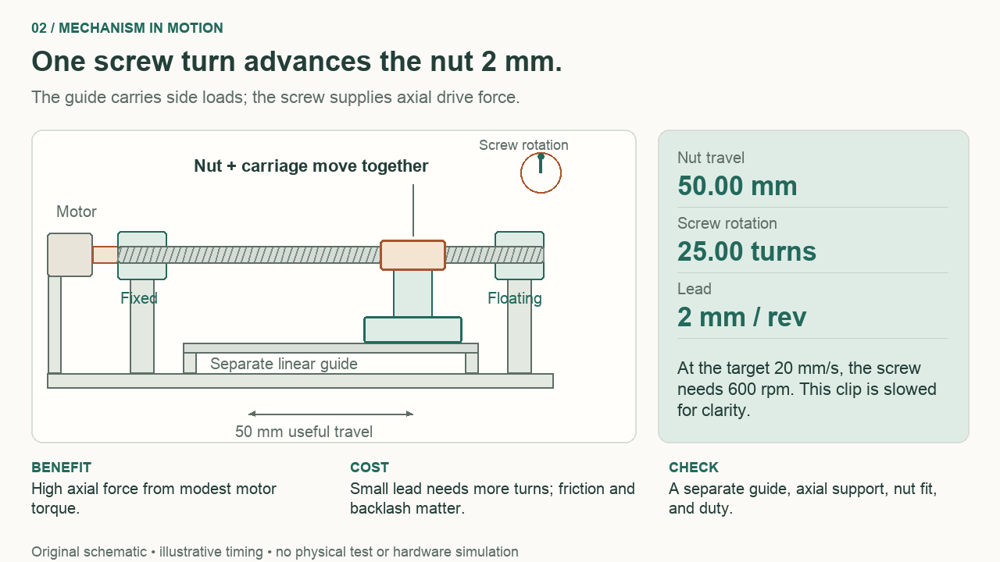
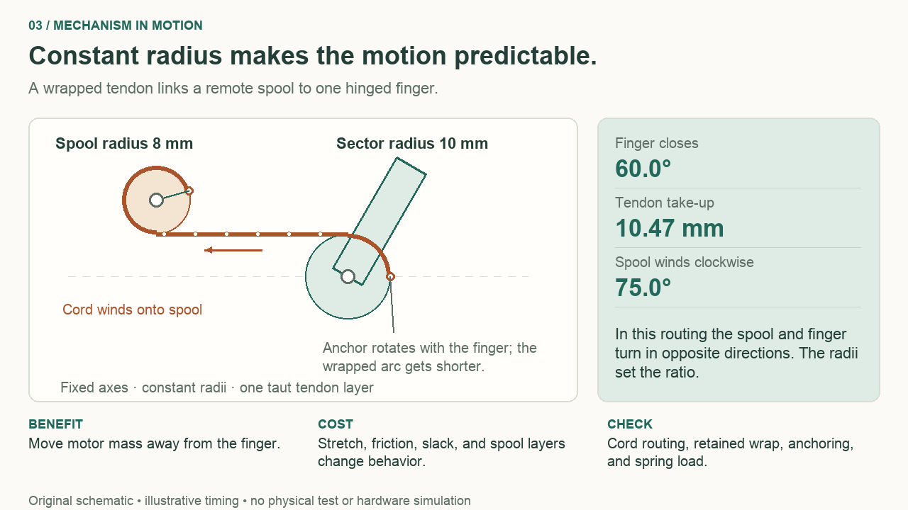

How to use this guide
Read, predict, model, measure.
You can start without a motor. Work through the load example, change a parameter, and build a CAD layout before selecting hardware. The later chapters show how to turn those decisions into a careful bench experiment.
A visual field guide
Types, advantages, and limits
Select any schematic to enlarge it. Use the gallery arrows to compare figures.
A motor that works well in a printer can be a poor choice for a robot elbow. The printer may care about repeatable positioning along a guide. The elbow may need to hold weight, survive pushes, and move gently in contact with a person or object. We can understand the difference by comparing the complete job: motion, load, duty, feedback, support, and available power.
Use this visual map to make a shortlist, then follow the linked chapters for the calculations. The advantages below are reasons to investigate a family. The constraints are questions its actual datasheet and your prototype must answer; they are not universal rankings of every product in that family.
First separate the names
Brushed, stepper, and brushless describe motor technologies. Servo describes a feedback-controlled system, and an integrated servo packages several parts of that system. Belt, gearbox, screw, and tendon describe ways to transmit motion. Series elastic describes where a compliant element sits in the force path. Those categories overlap: a brushless servo can drive a belt, a geared servo can pull a tendon, and either can include measured series compliance.

Look for what turns and what switches the magnetic field. The drawings simplify pole counts and winding paths; they are explanations of operating principles, not winding instructions or sectioned product models.
| Electric option | Why it can be useful | Main cost or limitation | Check before choosing |
|---|---|---|---|
| Brushed DC gearmotor | Straightforward reversible drive; many sizes and ratios; useful for wheels and simple mechanisms | Brushes wear; gears add clearance and losses; a bare motor does not report angle | Continuous torque at speed, startup current, gearbox limits, encoder location |
| Integrated positional servo | Motor, reduction, sensing, and control arrive together; convenient for a first joint or gripper | Package geometry, modes, thermal behavior, and output support constrain your mechanism | Usable travel, sustained load data, bearing loads, command-loss behavior, telemetry |
| Stepper with driver | Predictable command increments and useful low-speed positioning; common in guided stages | Moving torque falls within a speed-dependent envelope; heat and resonance matter; open loop can miss motion | Actual motor/driver torque–speed curve, acceleration, duty, homing, and feedback needs |
| Brushless motor with servo drive | Electronic commutation; flexible torque/velocity/position control when properly integrated | Rotor sensing or estimation, compatible electronics, commissioning, and tuning add work | Torque/current convention, voltage headroom, low-speed control, peak and continuous limits |
| Direct or modest-reduction drive | Removes or reduces transmission effects; attractive for a joint you want to push or control in contact | Motor must provide more joint torque; mass, current, and cooling can grow | Whole-system torque density, cogging/friction, thermal conditions, power-off behavior |
Microchip's motor-control overview separates the commutation and drive approaches. Oriental Motor's stepper explanation shows the phase-and-rotor relationship. Read chapter 2 for the qualifications that product headlines often leave out.
Then choose the mechanical exchange

Trace the input and output arrows. The familiar 20T:60T examples both reduce speed by three, but place the shafts and reverse direction differently. The planetary example has another moving member—the carrier—so its ratio is 1 + 60/20 = 4, not 60/20.
| Transmission | What it buys | What it adds to the design |
|---|---|---|
| Timing belt | Separates axes; lets you move motor mass away from the joint | Belt width and tension, shaft loads, alignment, elastic stretch, and installation travel |
| Spur or planetary gears | Compact torque multiplication; a planetary stage can keep input and output coaxial | Tooth and bearing loads, backlash, lubrication, housing stiffness, and ratio-dependent inertia |
| Cycloidal or strain-wave reducer | Large reduction in a compact arrangement | Eccentric or flexing components, precision interfaces, compliance, fatigue, and assembly complexity |
| Worm drive | Right-angle packaging and substantial reduction | Sliding losses and heating; difficult backdriving does not establish a reliable power-loss restraint |
| Screw | Converts many motor turns into small linear travel and axial force | A separate guide, defined thrust support, lead accuracy, backlash, critical speed, and end margins |
| Tendon and spool | Remote motor placement and a light moving finger | Tension-only action, routing friction, stretch, slack, termination, and changing spool radius |
Reduction trades speed for torque; it also changes reflected inertia. Backlash is motion through clearance; compliance is deformation under load. A transmission can have little backlash yet still twist appreciably. Chapter 3 develops those distinctions. The planetary derivation explains why identifying the fixed member is essential.
For the first printed joint, a belt layout makes shaft support and alignment easy to see. That is a teaching advantage, not a claim that belts always outperform gearboxes. A compact enclosed joint may justify the integration effort of a purchased reducer; a long stage may favor a screw or belt for entirely different reasons.
Some constraints live in the physical effect

Read each horizontal axis before comparing curves. Speed, open gap, and stroke position are different variables. None of these drawings is a product rating. In particular, a solenoid's strong seated pull may say little about whether it can begin moving your load. The straight motor line is a first model; maxon's explanation describes its limits.
| Other option | A plausible job | Advantage | Constraint that often decides |
|---|---|---|---|
| Pull solenoid | Latch or brief end-to-end action | Compact, simple pull mechanism | Force across the entire stroke, return mechanism, impact, and permitted energized duty |
| Voice coil | Small controlled displacement or oscillation | Bidirectional force from current, without a rotary transmission | Stroke, guidance, continuous heating, and feedback; verify the stated force region |
| Pneumatic cylinder | Repetitive clamp where air already exists | Compact cylinder and simple end-to-end motion | Air supply, valves/flow, compressibility, friction, and behavior after pressure loss |
| Hydraulic cylinder | High-force machine with suitable hydraulic infrastructure | High force from a compact cylinder | Pump, valves, hoses, seals, heat, leakage, and load holding belong in the system comparison |
| Shape-memory wire | Occasional compact latch or shape change | Small active element and quiet motion | Required wire length, heating/cooling time, bias force, operating temperature, and cycle life |
| Piezo actuator | Fine focus, alignment, or vibration control | Small, stiff motion with suitable electronics | Stroke–force trade, driver voltage/current, hysteresis, creep, and loaded dynamics |
| Series elastic arrangement | A mechanism that needs measured compliant contact | Spring deformation can estimate transmitted force after calibration | Extra travel, stored energy, stiffness choice, sensing, and achievable control bandwidth |
H2W's voice-coil/solenoid comparison explains why those two magnetic devices serve different motion needs. SMC labels cylinder output theoretical: pressure times area precedes friction and the rest of the mechanism. Chapter 8 works through the less familiar options and their complete energy supplies.
Turn the map into a decision
Our arm needs a brief moving torque envelope near 0.312 N·m, reaches 30 rpm at the output, and may need to hold horizontally at a gravity moment of 0.28449 N·m. A candidate that passes the moving point can still fail sustained holding. For that job, start by screening continuous thermal capability and the power-loss arrangement. For a light, fast indexing stage, the decisive screen might instead be moving torque at speed and settling. For the tendon finger, it may be travel and force observability after contact.
Pick two plausible families and write one advantage, one cost, and one disqualifying condition for each. Then change one requirement. For example, replace “hold the arm all afternoon” with “move once, then rest on a mechanical support.” The load calculation remains useful, but the duty and holding requirements change. If your shortlist never changes when the requirements do, revisit which constraint you used to choose it.
Watch, pause, compare
See what a transmission trades
These three short, silent animations make the motion relationships visible. Use the player controls to pause or seek. They are mathematical schematics, with simplified shapes and time scales—not footage of a tested machine. All three clips, captions, and transcripts are included in the download.
Original schematic animation / silent / 12 seconds
Watch a 3:1 belt reduction
A silent original schematic animation: three turns of a 20-tooth input pulley produce one turn of a 60-tooth output pulley.
- Watch for
- Follow the green rotation marks and the turn counters. Both pulleys turn in the same direction; the larger output completes one turn while the input completes three.
- What you gain and what you give up
- A belt lets you move the motor away from the joint. Reduction trades output speed for torque; belt stretch, alignment, and tension add constraints on precision and shaft support.
Work through chapter 05 →Download MP4Download transcript
Read the motion explanation
Silent original schematic animation; no physical experiment is shown. Duration: 12 seconds.
The input pulley has 20 teeth and the output pulley has 60. Their pitch circles share a matched 2 mm pitch belt. The axes are 58.61153 mm apart for the candidate 200 mm pitch-length belt used in the guide. The tooth marks in the drawing are only schematic.
As the input makes three clockwise turns, the output makes one clockwise turn. An open belt preserves rotation direction. Reduction G=60/20=3 makes output speed one third of input speed. In an ideal lossless drive, output torque is three times input torque; real torque gain during forward power transmission is reduced by efficiency.
The benefit is flexible motor placement and a visible, serviceable transmission. The costs include belt elasticity, alignment sensitivity and support loads from belt tension. Check the matching tooth system, installation tension, shaft supports and allowable load. No bearing or belt load rating is established by the animation.
Original schematic animation / silent / 12 seconds
Watch rotation become linear travel
A silent original schematic animation: a rotating screw advances a guided nut and carriage through 50 mm of useful travel.

- Watch for
- The screw rotates without translating. The nut and carriage move together, while the separate guide keeps the carriage on its path. Twenty-five turns at 2 mm lead produce 50 mm of travel.
- What you gain and what you give up
- A small lead provides considerable force leverage but requires more motor revolutions for a given travel. Nut friction, backlash, axial support and guide alignment constrain the result.
Work through chapter 06 →Download MP4Download transcript
Read the motion explanation
Silent original schematic animation; no physical experiment is shown. Duration: 12 seconds.
The screw is held axially at its fixed support. A far support locates it radially while allowing the intended axial accommodation. The nut drives the carriage, and a separate linear guide carries lateral forces and moments. The motor coupling is not the thrust bearing.
For a 2 mm-per-revolution lead,25 screw revolutions produce 50 mm of nut travel. The animation is slowed to make the relationship visible. At the guide's separate steady-speed target of 20 mm/s, required speed is 20/2=10 revolutions per second, or 600 rpm.
A smaller lead reduces the ideal torque required for an axial force but increases the number of motor turns needed for a move. Friction and preload raise drive torque; thread backlash and structural flex affect positioning. Check lead rather than assuming thread pitch equals travel per turn. Support, nut engagement, guide alignment and power-loss behavior require their own design checks. The depicted helix is a symbol, not a manufacturing profile.
Original schematic animation / silent / 12 seconds
Watch the tendon wrap and spool together
A silent original schematic animation: a constant-radius finger sector closes 60° as an 8 mm effective-radius spool takes up 10.47 mm of tendon.

- Watch for
- Follow the tendon from the spool’s lower tangent to the finger sector’s upper tangent, around the wrapped arc, and into the moving anchor. The spool winds 75° clockwise while the finger closes 60° counterclockwise.
- What you gain and what you give up
- Remote actuation can reduce moving finger mass. A constant effective radius makes the motion ratio predictable, but cord stretch, routing friction, slack, changing spool layers and return-spring force affect real behavior.
Work through chapter 07 →Download MP4Download transcript
Read the motion explanation
Silent original schematic animation; no physical experiment is shown. Duration: 12 seconds.
The finger sector has a constant 10 mm effective radius and the spool has an 8 mm effective radius. Their axes remain fixed. The straight tendon touches the bottom of the spool and the top of the finger sector, so this routing makes their rotation directions opposite.
The finger anchor begins 60° below the finger’s forward direction. As the finger closes 60° counterclockwise, the wrapped angle from the upper tangent to the anchor decreases from 150° to 90°. The arc remains connected to the moving anchor; a line ending at the tangent point alone would not drive the finger.
Tendon take-up is radius times angle in radians: 10×π/3=10.47198 mm. The 8 mm spool therefore winds 10.47198/8=1.309 radians, or 75° clockwise. The clip does not show a contact force; these are motion relationships. At the guide’s specified perpendicular 5 N tip load 30 mm from the hinge, the ideal static tension is 15 N and spool torque 0.12 N·m, before spring and friction.
The benefit is placing motor mass away from the finger. Constraints include maintaining the intended tangent and effective radii, enough retained wrap, a reliable anchor, low routing friction, and controlled cord tension. Stretch, slack, layered winding and return springs change the actual position/force relationship. The hinge and spool need their own support structure, which is omitted from this motion schematic.
Find the video lessons in the chapters
Official demonstrations and university lessons connect the mechanisms to design choices. Each has a viewing prompt and a limitation to keep in mind.
- Motor types · Texas Instruments · Chapter 02
- Microstepping in bipolar stepper motors · Texas Instruments · Chapter 02
- Modern Robotics, Chapter 8.9: Actuation, Gearing, and Friction · Northwestern Robotics — Kevin M. Lynch and Frank C. Park · Chapter 03
- Harmonic Drive® strain wave gear - zero backlash · Harmonic Drive LLC · Chapter 03
- Tech Tips: Ball vs. Lead Screw Technology · Thomson Industries · Chapter 06
- SDM Hand · Yale Grablab · Chapter 07
- Basic pneumatics for process automation · Festo SA · Chapter 08
- Brushless-DC basics · Texas Instruments · Chapter 09
Chapter 01 / 10
Start at the thing you want to move
A small robot arm can be easy to move by hand and surprisingly difficult to drive well. It has to lift its load, speed up, stop without bouncing, and sometimes hold still for much longer than it moves. The motor has to do its share of that work while the shaft, bearings, frame, driver, and power supply do theirs. A large torque number on a product listing tells us very little about that whole job.
Our first design will move a 250 g payload at the end of a 100 mm arm. The arm itself weighs 80 g. We want a 90° swing in one second around a horizontal axis. That is small enough to reason about on paper, but it contains the same decisions that appear in larger robot joints: reduction ratio, support spacing, speed, feedback, heat, and what happens when power disappears.
By the end of this guide, you will be able to describe an actuator's job, estimate the demands it creates, compare drive arrangements, and model three mechanical layouts in Fusion. You will also have a measurement plan that tells you what a real prototype still needs to prove. The three studies are a belt-driven rotary joint, a screw-driven linear stage, and a tendon-driven finger. Their CAD files are dimensioned layout studies; they deliberately stop short of claiming a selected, manufactured, tested actuator.
You need basic arithmetic, a way to draw a dimensioned sketch, and a little familiarity with Fusion's sketches and components. The handbook's mechanisms chapter is a useful starting point if shafts, bearings, and transmissions are new. You can do the calculation activities without Fusion or any electronics. A calculator or the included Python programs is enough.
Draw the boundary before choosing parts
An actuator turns supplied energy into controlled mechanical motion or force. In a robot project, the useful design boundary is usually bigger than the motor. Include the transmission that changes speed and torque; the bearings and housing that carry loads; the sensor that reports motion; the driver that switches electrical power; and the controller that decides what to request next.

Follow the solid arrows to see where power travels. Follow the dashed arrows to see what is measured or commanded. The bearing support has a separate job: it closes the structural load path to the fixed frame.
Consider the same arm driven by a small geared motor. The motor creates torque. The gearbox changes the relation between motor rotation and arm rotation. If the arm is fastened to a long unsupported shaft extension, its weight also bends that shaft and loads the gearbox's output bearing. A gearbox that can transmit enough torque may still have an unsuitable bearing arrangement. We therefore draw a supported output shaft first and decide how to drive it second.
The electronics have a similar separation. A microcontroller can request a position; it cannot deliver the motor's required power directly. A driver switches that power, subject to its own current, voltage, and thermal limits. A feedback sensor measures something at a particular place. An encoder on the motor reports motor motion. It does not directly reveal a flexible belt twisting or a loose output hub moving independently.
This boundary makes comparisons fair. A hobby servo includes several pieces inside one enclosure. A bare brushless motor leaves many of them to you. Comparing their purchase prices or masses without accounting for the missing pieces is comparing different systems.
Write a job that a test could settle
“Strong and precise” is a direction, not a test. Replace it with a table of quantities and conditions. For our rotary study, we can already write the following. The unresolved entries are useful: they identify decisions that a product listing cannot make for us.
| Requirement | Study value or next decision | Why it changes the design |
|---|---|---|
| Payload and location | 0.25 kg, 100 mm from output axis | Sets gravitational moment and contributes inertia |
| Moving arm | Uniform 0.08 kg arm, 100 mm long | Its own weight and inertia also need support and drive torque |
| Orientation | Horizontal output axis | Gravity changes joint torque as the arm rotates |
| Motion | 90° in 1.0 s, rest to rest | Sets speed and acceleration once a profile is chosen |
| Motion profile | Symmetric triangular speed profile | Provides a simple, explicit acceleration model |
| Repetition and dwell | Specify before selecting a motor | A single move and a repeated cycle create different heating |
| Position error | Define at the output, under a stated load | Separates useful performance from encoder resolution |
| Power loss | Initially support the load independently | A powered holding claim says nothing about an unpowered joint |
| Environment | Indoor bench study | Temperature, debris, moisture, and duty remain product decisions |
For a real requirement, finish the sentence: “After approaching from either direction, the output must settle within ___ degrees in ___ seconds while carrying ___.” That wording exposes backlash and settling behavior. A repeatability test approached from only one direction answers a narrower question. Record which question you actually tested.
The requirement also needs a reference frame. An arm rotating in a horizontal plane around a vertical shaft has a different gravitational torque about that shaft from an arm lifting in a vertical plane. The same mass and distance are insufficient unless the orientation is known. Draw an arrow for gravity on your first sketch.
Manufacturer sizing procedures follow this output-first sequence: define the mechanism, motion, holding and positioning needs, calculate at the drive shaft, and then check the selected motor and gearhead together. The Oriental Motor sizing reference is a useful example of that workflow.
Separate weight, torque, and inertia
With the arm horizontal, the payload's weight is 0.25 × 9.81 = 2.4525 N. Its torque about the joint is that force multiplied by the perpendicular 0.100 m distance: 0.24525 N·m. The uniform arm's weight acts at its midpoint, adding 0.08 × 9.81 × 0.050 = 0.03924 N·m. Together, they produce 0.28449 N·m of gravitational torque.
That value is a static result. It says what must be balanced at the horizontal pose; it does not include acceleration, friction, or the mass of an output pulley we have not yet selected. When the arm points straight down or up, gravity has zero moment about this ideal joint even though the bearings still carry weight. A vanishing gravity torque does not mean a vanishing structural load.
Inertia describes resistance to a change in rotational speed. Mass farther from the axis matters more strongly here: a point mass contributes mass times radius squared. Our payload contributes 0.25 × 0.100² = 0.0025 kg·m². The uniform arm contributes mass times length squared divided by three, giving another 0.0002667 kg·m². The modeled load inertia is 0.0027667 kg·m².
Predict what happens if we move the same payload from 100 mm to 200 mm while keeping the original arm model separate. Its gravity torque doubles, but its inertia contribution becomes four times as large. This is why a longer robot link can demand a different actuator even when the payload does not change. If you also lengthen the arm, update its mass distribution instead of carrying forward the old arm inertia.
Keep units beside values in both sketches and spreadsheets. Entering 100 into a formula that expects meters makes the gravitational moment a thousand times too large and the payload inertia a million times too large. The included calculators accept labeled millimeters at their boundary and convert to meters before calculation.
A ratio changes more than torque
Suppose a motor turns a 20-tooth pulley that drives a 60-tooth output pulley. The reduction ratio is 60/20 = 3. The motor makes three revolutions for each output revolution. In an ideal lossless transmission, the output torque is three times the motor torque and its speed is one third. Power is conserved by that exchange; a ratio is not a source of energy.
Real transmissions lose energy and store some elastic deformation. Their geometry also changes what the motor and load feel when they accelerate. Motor inertia appears larger when viewed from a reduced-speed output; the ideal reflected value scales with the square of the ratio. Modern Robotics' actuation lesson develops that relationship. We will use it when a larger reduction looks like an effortless way to solve every torque problem.
For now, draw the motor and the output as separate rotating components. Place two bearing stations on the output shaft, then sketch the belt plane. The support spacing, output overhang, and belt tension influence shaft and frame loading. They belong in the same design review as the motor's torque-speed curve.
Make a requirements card before opening a catalog
Take a sheet of paper or copy the table above. Spend about twenty minutes completing these four steps for a mechanism you care about.
- Draw the moving part in its most demanding likely pose. Mark the axis, gravity, mass locations, and external contact force. If several poses might dominate, keep all of them.
- Write one motion in measurable terms: start, finish, distance or angle, and time. Add how often it repeats and how long it waits under load.
- Identify what must be measured at the output. Choose position, speed, force, or a combination, then state the condition under which an error would matter.
- Draw where the load goes when motion stops and when power is removed. Identify the frame, support bearings, and any independently rated holding element your application will require.
Your expected result is a page with enough information to estimate loads and enough open questions to guide measurement. It is normal for friction, required life, and thermal conditions to remain unknown. Label them “measure” or “decide,” rather than replacing them with favorable guesses.
If you cannot decide whether a load belongs in the torque calculation, ask whether its line of action has a perpendicular offset from the rotation axis. If you cannot decide whether it belongs in the bearing calculation, trace how its force reaches the frame. A load can matter to one calculation even when its contribution to the other is zero.
Check the boundary you drew
Prediction: A motor encoder reports exactly the commanded angle, but the arm tip moves when you push gently on it. Does that prove the controller is faulty?
Check: No. The output may move through belt elasticity, gearbox backlash, a loose hub, bearing clearance, or frame flex while the motor encoder stays still. First observe which parts move relative to one another. An output sensor can reveal the error; it cannot make a mechanically loose connection stiff.
Prediction: The calculated horizontal holding torque is 0.28449 N·m. A listing claims a 0.30 N·m stall torque. Is the motor selected?
Check: No. Stall describes zero-speed operation under particular conditions, often with current and heating that cannot be sustained. We still need motion torque, speed, continuous operation limits, the driver and supply, and the support structure. Chapters 2–4 turn those missing pieces into a comparison you can actually make.
For your own variation, take one neighboring robot module as the load. Weigh it, locate its center of mass relative to the proposed joint, and make the same requirements card. Keep those measurements separate from this guide's 250 g study. The existing 45° pivot gives us a useful mechanical starting point, but adding actuation will require a new load case, packaging review, and physical validation.
Chapter 02 / 10
Electric actuator families
A servo listing promises a large torque. A stepper promises thousands of positions per revolution. A brushless motor promises an impressive power rating. Which one can lift our 250 g payload, pause with the arm horizontal, and move again without overheating? None of those headline numbers answers the question. We need to know where the number was measured, under which conditions, and how the device responds when its load changes.
Bring the output requirements from chapter 1 and a calculator. By the end, you will be able to separate motor technology from feedback and gearing, reject an unsuitable specification, and identify the missing evidence needed before buying a candidate. This chapter uses paper calculations and datasheets; it does not require powering a motor.
Three decisions hiding inside one product name
A motor converts electrical energy into mechanical motion. A transmission changes the relationship between motor motion and load motion. A servo system measures something, compares it with a command, and adjusts drive effort to reduce the difference. A brushed motor with an encoder and controller can form a servo. So can a brushless motor or a stepper. A gearmotor includes a transmission, but it need not include position feedback.

The sensor's location matters. A motor encoder can report that the motor reached its target while a loose hub, flexible belt, or gearbox clearance lets the output differ. An output encoder observes those downstream effects, although observing them does not make the structure infinitely stiff. Keep the power path, measurement path, and support structure separate in your sketch. That habit will make later control problems much easier to diagnose.
Our arm needs approximately 0.284 N·m to remain horizontal. Its planned 90° move in one second reaches 30 rpm at the output. These are different requirements: a brief move and a sustained hold can stress the same actuator differently. Chapter 4 develops their complete sizing calculation.
Brushed DC: current produces torque, speed changes current
In a brushed DC motor, mechanical contacts switch winding connections as the rotor turns. For a first model, torque increases with winding current. Rotation also generates a voltage opposing the supply, called back EMF. At a fixed applied voltage, faster rotation leaves less voltage available to push current through winding resistance. That connection explains the familiar falling torque–speed line. Maxon's motor-data explanation shows both the useful approximation and cases where a straight line becomes inaccurate.
A gearmotor combines this motor with reduction. You gain output torque and lose output speed, while adding gearbox losses, clearance, and limits. Check whether a specification describes the bare motor or the gearbox output. Then check gearbox maximum torque separately: increasing motor current cannot strengthen gear teeth.
At zero speed, back EMF disappears. Applying full voltage can therefore draw a large current even though useful mechanical power, torque × speed, is zero. That electrical input becomes heat and other losses. Startup, sudden reversal, and a blocked output all deserve attention in driver selection. Pololu's motor and supply guide distinguishes starting/stall current from free-running current and explains why prolonged stall can damage a motor.
This family is approachable for a first custom mechanism because motor, driver, encoder, and transmission remain visible design choices. The price of that flexibility is integration work: a two-wire motor does not know its angle. A reversible driver supplies power; a controller and suitable feedback create controlled positioning.
Hobby and smart servos package the integration
A conventional positional hobby servo usually packages a small motor, reduction gears, an output-position sensor, and control electronics. Your command requests a position within its supported range. A continuous-rotation variant may interpret a similar command as speed or direction instead; the connector alone does not identify the behavior. Read the actual product's operating modes before designing a joint around it.
A smart servo adds a communication interface and may expose measured position, current, temperature, faults, and several control modes. For example, the ROBOTIS XM430 manual documents current, velocity, position, and current-based position modes. It also distinguishes momentary stall torque from real operating performance. That makes the manual useful for learning what a complete actuator specification should contain; it is not a selection of that servo for our arm.
An integrated package can accelerate learning about mechanisms because you spend less time assembling a control system. However, inspect its output bearing capacity, mounting pattern, electrical interface, and behavior after communication loss. A servo horn transmits torque; its existence does not establish that the shaft can carry an arbitrarily long cantilever. A current limit can limit motor effort, but friction and gear losses prevent treating it as a perfectly calibrated contact-force limit.
Stepper: count commands, then check whether motion followed
A stepper's magnetic geometry creates a sequence of preferred rotor angles. The driver advances the magnetic field, and the rotor follows if available torque can overcome load and acceleration. In an open-loop system, counting commands estimates position; it does not measure missed motion. A closed-loop stepper adds feedback, but still has finite torque and speed.
Holding torque describes a stationary energized condition. Moving torque depends on the motor, driver, supply, winding current, and speed. Inductance limits how rapidly winding current changes; at higher stepping rates the current may not reach the intended value. A current-regulated driver switches its supply to regulate phase current. Set that current according to both motor and driver documentation; supply voltage and winding current are separate specifications.
Use the actual motor-and-driver pullout curve, the boundary beyond which synchronous motion cannot be maintained under the stated test conditions. Being below it is necessary, but startup, acceleration, resonance, and thermal limits still require margin. Oriental Motor's curve-reading guide identifies the driver, voltage, test load, holding torque, and pullout information you should look for. A curve for a different driver or voltage is not proof of your system's performance.
Microstepping uses intermediate phase-current combinations to make motion smoother. A 1.8° motor at 16 microsteps per full step has a commanded increment of 1.8 / 16 = 0.1125°. Through our 3:1 belt, that corresponds to 0.0375° at the output. This is command resolution, not a measured accuracy claim. Friction, load, current errors, and motor geometry affect where the rotor actually settles. TI's microstepping application note explains why the incremental torque from one small command can be too small to cause immediate motion. This does not mean the motor's entire torque capacity falls by the microstep divisor.
Steppers suit many positioning stages when the required torque remains available over the complete speed profile. For a mobile robot joint, also consider the energy spent holding position, motor mass carried by other joints, and what happens if synchronization is lost.
Brushless motors and field-oriented control
Permanent-magnet brushless motors move commutation into electronics. Product language often distinguishes BLDC motors associated with trapezoidal commutation from PMSMs associated with sinusoidal excitation; examine the winding, back-EMF shape, sensor, and supported drive rather than assuming the label determines everything. Field-oriented control, or FOC, regulates current components relative to the rotor's magnetic orientation, giving a useful way to command torque. It requires a sufficiently accurate rotor-angle measurement or estimate. Microchip's motor-control resources distinguish these control approaches and their implementations.
A sensorless fan controller and a robot-joint drive have different jobs. The joint may need controlled torque at rest, slow reversal, and recovery after an external push. Some sensorless methods need a startup alignment and acceleration sequence; others use specialized low-speed estimation. TI's sensorless startup documentation makes that sequence explicit. Verify the selected controller's zero-speed behavior rather than assuming “FOC” guarantees it.
A direct-drive joint connects the motor to the load without reduction. A quasi-direct-drive joint uses a relatively small reduction with a motor capable of substantial torque. Both can reduce transmission friction and reflected rotor inertia compared with high reduction, but they demand enough motor torque and heat rejection. The Berkeley Blue research paper shows this design trade in an actual research robot. Its results belong to that robot; they do not certify a smaller printed version.
A candidate that passes one check and fails another
Consider an invented DC gearmotor whose gearbox-output data at one supply voltage are 500 rpm no-load speed, 0.200 N·m stall torque, and a 0.060 N·m continuous limit under stated cooling conditions. Treat its output as the input to our additional 3:1 belt. These are teaching values, not a purchasable specification.
At 90 rpm, a linear torque–speed model predicts available torque of 0.200 × (1 − 90/500) = 0.164 N·m. Our conservative moving-load bound of 0.312 N·m requires about 0.312 / (3 × 0.90) = 0.116 N·m at this shaft, before its own acceleration and additional losses. The candidate clears that preliminary curve check.
For a conservative holding screen, give no credit to unmeasured static friction supporting the arm. The ideal torque balance then requires 0.28449 / 3 = 0.0948 N·m, exceeding the invented 0.060 N·m continuous limit. The candidate fails this screen. Real static friction could reduce the motor torque needed, but that needs evidence rather than a favorable assumption. Applying a moving efficiency at zero speed cannot resolve the static balance. Rotor/gear inertia and duty-cycle information also remain necessary for final selection.
Make a specification card before shopping
Predict first: will doubling microstep subdivision double usable positioning accuracy? Will a curve that passes at peak speed guarantee a cool horizontal hold?
- Open the Oriental Motor curve guide and choose one displayed curve. Record its motor, driver, supply, current if given, and axis units. Mark missing information explicitly.
- Read three speed–torque points. Record approximate values with reading uncertainty rather than inventing precision from a small graph.
- Write a separate specification card for the invented gearmotor above. Keep curve capability, continuous torque, gearbox limits, sensor location, and power-loss behavior in separate fields.
- Recalculate its curve torque at 180 rpm, then explain whether that change repairs its holding problem.
Check: the illustrative available torque becomes 0.128 N·m. Its continuous holding limit stays 0.060 N·m, so the hold still fails. Finer microsteps reduce command spacing; accuracy needs measurement. If your curve reading differs by a factor of 60 or 2π, inspect rpm versus revolutions per second versus radians per second before changing the mechanical design.
For an independent variation, change the task to a vertical-axis turntable with the same inertia. Explain which gravity term disappears and which acceleration, friction, bearing, and thermal questions remain. That exercise should lead to a different candidate shortlist even though the payload mass is unchanged.
Chapter 03 / 10
Choosing a transmission
Our arm needs slow rotation and appreciable holding torque. A small motor often prefers to turn faster. A transmission can make those requirements compatible, but it also changes the feel of an external push, the forces in the bearings, and the angle error after a reversal. Choosing only a reduction ratio leaves most of the mechanism undesigned.
Bring torque, angular speed, and the distinction between motor and output from chapter 2. You will compare transmission families, calculate the effects of reduction, and sketch where the resulting forces enter a printed frame. The exercises need a calculator and paper. The geometry remains a design study until actual purchased parts and their limits are selected.
Define the ratio before using it
Define reduction as N = motor speed / output speed. A 20-tooth motor pulley driving a 60-tooth output pulley therefore gives N = 60/20 = 3. The motor turns three revolutions while the output turns once. For forward power transmission with efficiency η:
ωmotor = N × ωoutput
τoutput ≈ η × N × τmotor
The ratio trades speed for torque. It does not create power: multiplying these relationships gives output mechanical power approximately η times input mechanical power. Efficiency represents losses under specified operating conditions. At rest, where mechanical power is zero, use a static torque/friction model and thermal limits rather than pretending a power efficiency determines holding behavior.
Our shared arm's moving-load bound is approximately 0.312 N·m and its peak output speed is 30 rpm. With N = 3 and assumed η = 0.90, the preliminary motor-shaft targets are about 0.116 N·m and 90 rpm. These are conservative sizing coordinates, not a claim that maximum load torque occurs at exactly the maximum-speed instant. They also exclude the motor's own inertia and unidentified transmission losses.
Belts make the arrangement visible
A toothed belt can separate the motor axis from the output axis. That helps place motor mass closer to the robot's base and leaves the joint center available for a shaft or cable passage. Tooth engagement determines the nominal ratio; belt stretch, tooth clearance, pulley alignment, and mounting flexibility still affect loaded positioning. A toothed belt should not be described as perfectly rigid or automatically free of reversal error.
The pitch circle follows the belt's nominal pitch line. For tooth count z and pitch p, its diameter is d = zp/π. Our 2 mm pitch, 20T and 60T layout therefore uses pitch diameters 12.73 mm and 38.20 mm. Those circles locate motion; they are not pulley outside diameters or manufacture-ready tooth profiles. Select a matching belt and pulley tooth system before importing supplier CAD or preparing production geometry.
Torque comes from a difference between tight-side and slack-side belt tensions. At the output pulley, ΔT = τ/r. A 0.312 N·m torque on a 19.10 mm pitch radius requires a tension difference near 16.3 N. The shaft also experiences the vector sum of both span tensions. Pretension can make that bearing load much larger than the torque-producing difference. Gates' precision-drive manual provides separate selection, tension, and force relationships; using the tension difference alone as a bearing load misses part of the problem.
In Fusion, model the belt plane, pulley faces, flange envelopes, bearing stations, and tension-adjustment travel before decorating the housing. Keep a path for sliding the belt into place and reaching the mounting screws. A motor plate that bends under pretension changes alignment even when the motor has ample torque. Chapter 5 develops this layout into the guide's first rotary study.
Gears concentrate the ratio
An external spur-gear pair turns opposite ways, with speed ratio set by tooth count. Several pairs multiply their ratios, while their losses and clearances accumulate. Gears keep the drive compact but create tooth forces that push shafts apart. For a chosen gear geometry, tangential force transmits torque and the pressure angle determines an additional separating component. Shaft locations and housing stiffness therefore belong in the gear design.
A planetary stage puts planet gears between a central sun and an outer ring. With the ring fixed, sun input, and carrier output, the ideal reduction is N = 1 + Zring/Zsun. A 60-tooth ring and 20-tooth sun give 4:1; the moving carrier changes the kinematics. Jönköping University's planetary-gear lesson derives the relationships for different fixed members. Load sharing also depends on geometry, support, and tolerances; multiplying one tooth's strength by the number of planets is not a complete rating method.
Printed spur or planetary gears can teach assembly and motion at low loads. Start with a valid tooth profile, adequate tooth thickness, retained shafts, and measured center-distance clearance. Layer direction, tooth-root stress, surface finish, temperature, and wear then become experimental variables. A printed housing around purchased gears often separates useful fabrication practice from the harder task of making durable precision teeth.
Cycloidal and strain-wave drives use small geometric differences
A cycloidal reducer uses an eccentric input to move a lobed disc around a surrounding ring of pins or rollers. The difference between disc lobes and ring features produces a large reduction; output pins or another mechanism extract the disc's slow rotation while accommodating its orbit. Nabtesco's RV mechanism explanation shows a commercial two-stage arrangement with paired discs and deliberate bearing support. Its shock and precision claims describe that engineered product, not every printed cycloidal shape.
A strain-wave drive uses a wave generator to deform a flexible toothed member into engagement with a rigid outer member. In a common arrangement, the flexible member has two fewer teeth. A 200-tooth flexspline inside a fixed 202-tooth circular spline retreats two teeth per wave-generator revolution, yielding 100:1 reduction with reversed direction. Harmonic Drive Systems' operating-principle animation makes those moving engagement regions visible.
Both mechanisms offer compact high reduction, but compactness does not eliminate elasticity, friction, fatigue, or assembly tolerances. A strain-wave flexspline bends repeatedly; a printed demonstration must be evaluated for cyclic material behavior rather than assigned the life of a metal commercial unit. “Zero backlash” also does not mean zero torsional deflection under load. Keep those as separate quantities in a comparison table.
A worm drive uses a screw-like input meshing with a wheel, often turning the output through a right angle. Its sliding contact makes friction and lubrication consequential. Some combinations resist backdriving, but that behavior depends on geometry and condition. Bodine's gearmotor FAQ explicitly warns against relying on self-locking gearing to prevent movement. If power loss must not drop the arm, design an appropriate holding device and supported failure state; a difficult-to-turn gearbox is not sufficient evidence.
Reduction changes inertia in both directions
Imagine accelerating the output by hand. The motor must accelerate N times as fast. Since rotational kinetic energy is ½Jω², substituting ωmotor = Nωoutput makes the motor's energy look like an output-side inertia Jmotor × N². Looking from the motor in the opposite direction, the load appears as Jload/N². These describe the same mechanism from different reference shafts.

For our payload and uniform arm, Jload = 0.25×0.1² + 0.08×0.1²/3 = 0.002767 kg·m². To expose the trade, temporarily assume an illustrative motor inertia of 0.000020 kg·m²; this is a sensitivity input, not the inertia of a selected motor. Ignore transmission inertia and losses for this energy comparison.
| Reduction N | Motor speed at 30 rpm output | Load inertia seen at motor, kg·m² | Motor inertia seen at output, kg·m² |
|---|---|---|---|
| 1 | 30 rpm | 0.002767 | 0.000020 |
| 3 | 90 rpm | 0.0003074 | 0.000180 |
| 10 | 300 rpm | 0.00002767 | 0.002000 |
| 30 | 900 rpm | 0.000003074 | 0.018000 |
More reduction makes the load easier for the motor to accelerate, but makes the motor harder for the output to accelerate. At 30:1, this illustrative rotor contributes over six times the arm's own inertia when viewed at the output. This matters for impacts, hand guidance, and force response. Add gearbox and pulley inertia at their actual shaft speeds; do not multiply every component by the same ratio.
Direct drive sets N = 1, removing the reduction stage while demanding the full joint torque from the motor. A modest-ratio quasi-direct drive retains some torque multiplication with a smaller inertia penalty. Neither term guarantees backdrivability: cogging, seals, friction, active control, and electrical braking also affect an external push. A power-off test condition must specify whether motor terminals are open, shorted, or connected to a live drive.
Carry bending around the transmission
The arm's load creates both a torque about the rotation axis and forces perpendicular to it. A motor torque rating addresses only the first. Support the output shaft through a bearing arrangement whose radial, axial, moment, speed, and fit limits suit the complete load. Our two 608-size bearing envelopes, 30 mm apart, illustrate a support layout; their dimensions alone provide no assembled load rating.
As a simple moment check, a 0.300 N·m bending moment reacted by two stations 0.030 m apart requires a force couple of M/L = 10 N. Doubling spacing halves that couple. Actual bearing reactions must also include net arm weight, belt forces, overhang, and axial loads; the 10 N is not the complete reaction. Move the pulley into a well-supported region where packaging permits, and make the bearing seats part of a continuous load path into the frame.
For printed parts, broad load paths, accessible through-bolts, and metal shaft interfaces are useful starting choices. Radius a structural inside corner to reduce a sharp stress concentration; chamfer an insertion edge to help assembly. Neither feature compensates for thin material splitting across layers. Inspect the print orientation together with the free-body diagram.
Compare ratios without hiding the costs
Predict: if N doubles with the same motor, does motor inertia felt at the output double or quadruple? Does doubling bearing spacing reduce the arm's weight?
- Recreate the four-row inertia table in a spreadsheet or calculator, retaining units in column headings.
- Change the illustrative motor inertia to
0.000040 kg·m². Identify which columns change. - Sketch the 3:1 belt drive in side view. Mark both bearing centers, both pulley centers, the belt plane, and the arm's load line. Add an assembly direction and a wrench-access arrow.
- On a second sketch, shorten the bearing spacing from 30 mm to 15 mm while keeping the illustrative bending moment at 0.300 N·m. Recalculate the moment couple.
Check: reflected motor inertia quadruples when N doubles. Doubling motor inertia doubles only the final table column. The closer stations require a 20 N moment couple, while net weight stays unchanged. If your bearing calculation gives smaller couple forces at smaller spacing, the lever arm has been inverted. If your gear ratio appears to create power, check that torque and speed refer to the same shaft.
For an independent design, compare a 3:1 belt and a 30:1 gearbox for a joint a person must reposition by hand with drive power removed. Make a decision using torque–speed capability, inertia, friction, encoder location, and the behavior after release. The strongest explanation will identify the measurements still needed rather than declare a winner from ratio alone.
Chapter 04 / 10
Size the complete motion
A motor can lift an arm once and still be unsuitable for holding it all afternoon. The lift asks for torque and speed together; the hold asks for torque without cooling time. This chapter turns the rotary study into a small requirements sheet with separate entries for motion, holding, current, and repeated operation.
You need the force and moment ideas from the requirements chapter, a calculator, and optionally Python 3.10 or newer. You will calculate the load demand, translate it through a reduction, and run a time history that exposes what a single “required torque” number leaves out. The numbers describe a design study, not a tested rating for the earlier pivot.
Start where the load acts
Our output shaft has a horizontal axis. A 100 mm arm carries a 0.25 kg payload at its tip; the uniform arm itself weighs 0.08 kg. Measure angle θ upward from horizontal. The payload's weight acts at 100 mm and the arm's weight at its midpoint, 50 mm. At horizontal, both have their greatest moment arm about this shaft.
Convert millimeters to meters before multiplying. Using gravitational acceleration g = 9.81 m/s²:
Maximum gravity torque = g × (payload mass × tip radius + arm mass × length/2)
= 9.81 × (0.25 × 0.100 + 0.08 × 0.050)
= 0.28449 N·m
Gravity torque at angle θ = 0.28449 × cos(θ) N·m
At vertical, gravity contributes zero torque in this ideal geometry. That does not make vertical a robust parking position: a disturbance, a shifted center of mass, or a loss of support can start a fall. Plan a mechanically supported rest position before adding power.
Mass also resists acceleration. Moment of inertia J records both how much mass there is and how far it is from the axis. A point payload contributes mr²; a uniform slender arm rotating about one end contributes mL²/3. Therefore J_load = 0.25 × 0.100² + 0.08 × 0.100²/3 = 0.002766667 kg·m². Inertia remains present when the arm is stationary; its acceleration torque happens to be zero then. Add real output pulleys, hubs, fasteners, and wiring masses when the layout becomes a specific assembly.
Specify how the arm gets there
“Move 90° in one second” does not specify a speed profile. We choose equal acceleration and deceleration halves, with no cruise interval. The speed graph is a triangle: its area must equal the angular travel. A 90° move is π/2 radians, so peak speed is twice travel divided by time, or π rad/s = 30 rpm. Constant acceleration during the first half is 2π rad/s² = 6.283185 rad/s².
The acceleration torque magnitude is J_load × α = 0.017383479 N·m. Gravity dominates this particular slow move. Shorten the time to 0.5 seconds and speed doubles, but acceleration and its torque increase fourfold. The gravity term remains unchanged. This is why choosing a faster motor is not the whole answer to a faster move.

The discontinuity halfway through this ideal profile demands an instantaneous acceleration change. A real mechanism has finite stiffness and a real drive has finite bandwidth. Use this profile for a first sizing calculation; later choose a trajectory with bounded acceleration changes if the mechanism rings or the process requires smoother movement.
An envelope and a time history answer different questions
Add a deliberately assumed 0.010 N·m moving friction allowance. This is a placeholder to replace with measurement, and it does not describe breakaway friction. A positive-demand envelope adds the largest magnitudes:
Output envelope = maximum gravity + acceleration magnitude + moving friction
= 0.284490 + 0.017383479 + 0.010000
= 0.311873479 N·m
An envelope is useful before the timing is known. It is not automatically the largest torque that actually occurs. In this specific upward move, maximum gravity and positive acceleration coincide in the limit just after starting, so the model approaches this value. In a different orientation or trajectory, the peaks need not coincide.
To find simultaneous demand, evaluate torque at the same θ, velocity, and acceleration at every instant. Just before the halfway point, θ approaches 45° and acceleration is positive. Just afterward, gravity is nearly unchanged but acceleration reverses. Near the vertical endpoint, deceleration can require negative actuator torque even though velocity remains positive. That interval can return mechanical energy toward the drive. Never apply a forward-efficiency formula indiscriminately to this reverse flow.
Move the demand to the motor shaft
The 20-tooth driving pulley and 60-tooth output pulley give reduction G = 3. Define G as motor speed divided by output speed. Peak motor speed is 90 rpm. With assumed forward efficiency η = 0.90, the motor's transmission torque subtotal is 0.311873479/(3 × 0.90) = 0.115508696 N·m.
The rotor must accelerate too. Suppose a candidate's rotor inertia were 0.000010 kg·m². This is an illustrative input, not an identified motor. Motor acceleration is Gα, so its additional torque is J_motor × G × α = 0.000188496 N·m. The combined illustrative envelope becomes 0.115697192 N·m, before omitted motor friction and input-pulley inertia.
Increasing reduction lowers the load's contribution but increases the rotor acceleration term. The load inertia reflected to the motor is J_load/G² = 0.000307407 kg·m². The square comes from kinetic energy: substituting output speed = motor speed/G into ½Jω² produces the factor 1/G². This coordinate conversion does not remove bearing forces, belt tension, or structural bending. Oriental Motor's sizing procedure likewise treats inertia, torque, and speed as separate selection inputs.
Do not choose a motor from stall torque alone. Compare the demanded torque at its accompanying speed against the selected motor-and-drive operating limits, then check pulse duration, repetition, supply voltage, and temperature conditions. A reduction is only acceptable if its own torque, speed, radial-load, and life limits also fit.
Run the numerical experiment
Download actuator_sizing.py and test_actuator_sizing.py into one folder. Open a terminal there and run:
python3 actuator_sizing.py --rotor-inertia 0.00001 --csv cycle.csv
python3 -m unittest -v test_actuator_sizing
The program uses only Python's standard library and never connects to hardware. The first section prints the forward-efficiency envelope above. The second deliberately uses an ideal reversible transmission, η = 1, for a four-second cycle: raise for one second, hold vertical for one, lower for one, hold horizontal for one. It includes the specified rotor inertia and signed moving friction; holds receive no friction credit. It does not simulate a controller.
The executed reference run produced 0.068669031 N·m motor RMS torque for that ideal cycle and 0.031415927 J net mechanical work. These are calculated results, not measurements. The work equals friction torque multiplied by the round-trip angle; potential and kinetic energy return to their starting values. The 14 accompanying tests passed, including energy balance, reversed motion, time scaling, and invalid-input rejection.
RMS means square each torque, weight by its duration, average over the entire cycle, then take the square root. A hold belongs in that average. Dividing the peak by a convenient factor cannot reproduce an arbitrary cycle. RMS torque is useful for motor selection, but peak operation must also be checked separately. maxon's Formulae Handbook, section 6.5 presents those distinct checks.
If torque-producing current were defined by K_t = 0.020 N·m/A, our illustrative positive envelope corresponds to 5.78486 A, and the ideal cycle RMS corresponds to 3.43345 A. Neither is the bench supply's current. The meaning of an ampere must match the motor constant: winding current, phase RMS, phase peak, and field-oriented q-axis current are not interchangeable labels. Chapter 9 on feedback and drives develops this distinction.
Current RMS can estimate copper heating with an appropriate resistance and current convention. It does not predict winding temperature by itself: cooling, thermal time constants, changing resistance, and speed-dependent losses still matter. Our ideal-transmission RMS also omits transmission losses. Treat it as a comparison exercise, not permission for continuous operation.
Cross-check the other two designs
The horizontal screw stage needs 10 N at 20 mm/s. A 2 mm/rev lead requires 600 rpm. At assumed forward efficiency 0.35, torque is F × lead/(2πη) = 0.009094568 N·m. Multiplying torque by angular speed gives 0.571429 W input mechanical power; the stage receives Fv = 0.200 W. Acceleration, screw inertia, preload, and guide friction beyond the stated resistance remain separate.
For the finger, 5 N at a 30 mm tip arm needs 0.15 N·m at the hinge. A constant 10 mm tendon moment arm requires 15 N tension. An 8 mm spool needs 0.120 N·m, and a 60° finger turn consumes 10.471976 mm of tendon, or 75° of spool rotation. These assume constant moment arms and a single effective spool radius; return springs and routing losses add demand.
Predict what happens if you double screw lead or spool radius. The answer in each case is twice the required shaft torque and half the shaft rotation for the same output travel. Energy still balances. If your calculation makes both torque and travel smaller, inspect the ratio direction and millimeter-to-meter conversion.
For an independent variation, run the rotary program with --move-time 0.5, then with --ratio 6. Record which quantities change and which do not. Use that comparison to nominate two candidate motor/reduction combinations, leaving their thermal and electrical entries blank until actual datasheets supply them.
Change one assumption
The sizing workbench
Predict the result before changing an input. For the rotary study, try doubling the arm length, then halving the move time. The first changes gravity torque and inertia; the second changes speed and acceleration. Chapter 4 explains the model behind these numbers.
Rotary: torque, speed, and reach
What this calculation assumes
A point payload at the end of a uniform arm; a horizontal joint axis; a symmetric triangular speed profile. α = 4Δθ/t² and peak speed = 2Δθ/t. The conservative output torque envelope is maximum gravity + Jloadα + the entered friction allowance. The motor subtotal divides that sum by ηG; a specified rotor adds JmotorGα.
The maxima form a design envelope, not a full signed torque trace or a thermal rating. Efficiency applies here to forward motoring. Braking, regeneration, starting friction, duty cycle, motor and driver losses, and compliance need their own checks. Torque and peak speed do not necessarily occur together. Use the Python cycle lab for the explicitly idealized time trace.
Linear: lead trades speed for force
What this calculation assumes
A horizontal stage at steady speed. Screw torque = force × lead / (2πη); screw speed = travel speed / lead. Lead is travel per revolution, which may differ from thread pitch. The 0.35 efficiency is an assumption, not a property inferred from an 8 mm diameter.
The result omits acceleration, rotating inertia, preload, support friction, and electrical losses. It neither sizes the guide bearings nor proves the screw will hold on power loss.
Tendon: choose where leverage happens
What this calculation assumes
A single hinged finger, constant tendon moment arm, constant spool radius, and one known tip-force direction. Tendon tension = tip force × tip moment arm / tendon moment arm. Travel = tendon moment arm × finger angle in radians.
The ideal model omits tendon friction and stretch, spring torque, changing contact geometry, and multiple spool layers. Actual tip force needs measurement; motor position alone does not determine it.
Chapter 05 / 10
Design a belt-driven joint
A small motor can turn an arm without carrying the arm on its own bearings. Put the arm on a separate steel shaft, support that shaft at two stations, and connect the shafts with a timing belt. This separates two jobs that are easy to confuse: the belt transmits torque; the shaft supports and housing carry the external loads.
This study takes the 0.25 kg payload, 100 mm arm and 3:1 reduction from the sizing chapter into Fusion. You need that chapter's torque and speed concepts, basic sketch/extrude familiarity, and a millimetre document. By the end, you should be able to explain the load path, construct an editable layout, inspect its axial clearances, and design a small fit coupon before committing to a housing.
The downloads are envelope studies, not parts ready for fabrication. The native models contain separate, named components and editable sketches/extrusions. Their positions are snapshots; changing a reference parameter does not rebuild the complete assembly. The manual recipe below teaches the associations you should add to your own model. Pitch cylinders have no teeth, the motor is generic, and the purchased hardware, fasteners, fits and guards still need selection.
Fusion envelope model · STEP model · front DXF · axial DXF · parameter table · layout JSON

Fusion perspective of the separate shaft, bearing-station, pulley-pitch, arm, motor and bracket envelopes. No belt, pulley teeth, final fits or fasteners are modeled.
Make the geometry agree with the transmission
For a synchronous pulley, pitch circumference is tooth count multiplied by belt pitch. Our 20-tooth and 60-tooth pulleys at 2 mm pitch therefore have pitch diameters of 12.732 mm and 38.197 mm. Those circles describe motion; they are not outside diameters or tooth-generation templates. Buy a matched belt and pulley family, then replace the circles with the manufacturer's geometry. The Gates design manual explains selection of pitch, width, length, installation allowance and tension; matching “2 mm” alone is insufficient to establish a compatible system.
Choose a candidate belt pitch length of 200 mm for this study. For an open belt with centre distance C and pitch radii R and r, its ideal length is:
L = 2√(C² − (R − r)²) + π(R + r) + 2(R − r) asin((R − r)/C).
Solving gives C = 58.61153 mm. The downloadable generator solves this equation and checks the reconstructed length. We have not selected or verified a 200 mm belt SKU. Do that before converting the layout into a mounting pattern. Add a provisional 4 mm adjustment range along the centre line; the selected belt's installation and tensioning requirements determine the final slot length and nominal position.

In the front view, both bearings collapse onto one circle. The axial view resolves the arrangement: bearing centres are at z = 0 and 30 mm; their 7 mm widths occupy −3.5…3.5 and 26.5…33.5 mm. The provisional pulley occupies z = 10…20 mm. That leaves 6.5 mm on each side, before allowing for its actual hub, inner-ring spacers and retention hardware. A purchased pulley with a projecting hub can consume that space immediately. This is why an axial sketch precedes a detailed housing.
Follow the force before drawing the bracket
The horizontal arm's worst gravity torque is 9.81 × (0.25 × 0.1 + 0.08 × 0.05) = 0.28449 N·m. A 90° triangular move in one second has acceleration 6.283 rad/s². The arm and payload inertia total 0.0027667 kg·m², adding approximately 0.01738 N·m during acceleration. Adding the assumed 0.010 N·m friction allowance gives a conservative output-demand envelope of 0.3119 N·m. The gravity and acceleration maxima need not coincide; this sum is a useful preliminary bound.
At 3:1 and assumed 90% forward efficiency, this load contributes about 0.1155 N·m at the motor. Motor rotor inertia, drive-pulley inertia and other rotating parts still add acceleration torque. In particular, rotor inertia contributes Jmotor × 18.85 rad/s² for this motion; it has not been set to zero. Peak output speed is 30 rpm and motor speed 90 rpm.
At the output pitch radius, 0.3119 / 0.01910 ≈ 16.3 N is the difference between tight-side and slack-side belt tension. It is not the total bearing load. Installation tension can produce substantial radial force even with no output torque. The arm also produces shaft bending when its load acts away from the bearing span. Draw these forces separately. A wider bearing span helps resist a bending moment, but cannot fix a flexible base or loose bearing seats. The 608 dimensions in this exercise establish space; they do not establish a complete bearing rating or axial-retention scheme.
Build a skeleton that you can change

Create the document and components. Save a new design named
BeltJointStudy. CreateLayout,Base,MotorMount,OutputShaft,BearingA,BearingB,OutputPulleyandArmcomponents before adding solids. A component represents a separately moving or assembled item; a body is geometry within it. Ground the base in the completed assembly, not every component. Keep the existing pivot in its own file.Name the governing dimensions. Open Modify → Change Parameters. Enter
pitch = 2 mm,motor_teeth = 20,output_teeth = 60,center_distance = 58.61153 mm,bearing_spacing = 30 mm,bearing_width = 7 mm,shaft_diameter = 8 mm, andbelt_plane = 15 mm. Make tooth counts unitless. Define pitch diameters withmotor_teeth * pitch / PIandoutput_teeth * pitch / PI. Named expressions preserve intent when you revise the ratio. Autodesk's parameter reference describes these dependencies. Our CSV is a human-readable parameter table, not a promise of compatibility with Fusion's parameter-import schema.Constrain the front layout. Activate
Layout, create an XY sketch, and place the output circle at the origin. Place the motor circle to its right. Constrain its centre horizontal to the origin and dimension the centre distance. Make both pitch circles construction geometry and dimension their diameters with the expressions. Add two common external tangents as construction lines. Apply Tangent constraints and constrain each endpoint onto its circle; do not estimate the angle by eye. The motor centre should have no remaining freedom once its horizontal relation and distance are defined.Build the axial layout. Create an XZ sketch through the output axis. Draw construction station lines at z = 0,
belt_plane, andbearing_spacing. Add bearing and pulley section rectangles with their widths. Use symmetric dimensions about station lines instead of independently positioning both edges. Inspect the 6.5 mm spaces with Inspect → Measure. The two DXFs can provide a reference, but Insert DXF imports fixed sketch geometry; tracing the small skeleton with native constraints teaches more than fixing an entire imported drawing.Create the purchased-part envelopes. Activate each appropriate component. Use Construct → Offset Plane, then Sketch → Circle and Extrude for the shaft, bearing annuli and pitch cylinders. The output shaft spans z = −15…45 mm in the study. Model bearings as separate 8 mm bore, 22 mm OD, 7 mm wide annuli. Name pitch cylinders conspicuously. Replace them with supplier CAD before designing against flanges or hubs. A plain shaft cylinder likewise omits the features needed to transmit torque and retain parts.
Connect the stationary structure. Model two bearing cartridges attached to a common base. Keep one cartridge removable so that a belt and pulley can be installed between the stations. Sketch cartridge feet and triangular root gussets before adding cosmetic details. Project only the stable skeleton geometry you need; avoid projecting every edge of a detailed purchased component. Add a slotted motor plate whose adjustment follows the axis-centre line. Include the washer diameter and a straight driver-access cylinder at each proposed fastener, not merely its hole.
Represent motion and service access. Rigidly connect the shaft, arm and output pulley, then add a Revolute Joint between shaft and base. The motor turns on its own supports. Drive the output joint through the intended range and inspect arm/base clearance; a motion relation can express the ideal 3:1 ratio but does not simulate belt tension. Reserve at least 60 mm beyond the shaft insertion end in this study, then check the actual assembly sequence. A housing that assembles only by bending a shaft is unfinished.
Finish the printable parts deliberately
Start with a bearing-seat coupon instead of both cartridges. Sketch a 32 mm square with a central circular opening, extrude it 9 mm, and make three separate copies with trial openings of 22.2, 22.3 and 22.4 mm. These are exploratory dimensions for an accessible slip-fit experiment, not a bearing-fit specification. Print them in the intended material, orientation and slicer profile; measure the openings and record which accepts the actual bearing without hammering. A removable cap or properly designed retainer must supply retention rather than an arbitrary printed interference fit.
Use a small Chamfer, initially 0.3–0.5 mm at 45°, on bed-contact edges to reduce first-layer interference. Give an insertion mouth a short lead-in while preserving the intended cylindrical seating length. Use Fillet at heavily loaded bracket roots to spread the geometric transition. A rounded upper edge can create an unfavorable underside overhang; a chamfer or changed orientation may print more cleanly. Keep these finishing features late in the timeline so layout changes remain easier to diagnose.
A 0.4 mm nozzle and 0.2 mm layer height are reasonable first coupon settings on the X1 Carbon. Choose wall thickness from the actual line width and inspect the slicer's paths around seats, screw bosses and gussets. More infill does not repair a thin load path. Orient each cartridge so that its main bending load does not peel a narrow layer interface, and check whether the bearing bore needs support or finishing in that orientation. No fixed wall count establishes a load rating.
Check the design without powering it
On paper, list the order: open the removable station; place the belt around both pulleys; insert shaft, spacers and output pulley; close the station; add retention; align pulley planes; adjust belt tension according to the selected system. In Fusion, hide each installed component in reverse order. If a part cannot leave along its intended insertion path, revise access before printing.
For an eventual unpowered bench assembly, support the arm and verify smooth hand rotation before adding a payload. A tight spot once per turn suggests runout or misalignment; binding that appears when a cartridge is tightened suggests distorted or non-coaxial seats. Belt tracking against one flange suggests plane/alignment error. Loosening everything until it turns is a diagnosis step, not a final repair. Use the validation chapter to establish controlled loading and measurement after hardware selection.
Predict: If you double the bearing spacing while preserving the same bending moment, what happens to the ideal reaction-force couple? Answer: Its force magnitude halves because M = F × spacing. Shaft flexibility, housing deformation and direct radial forces remain. The model has not proven that overall deflection halves.
Try a variation: Replace the output pulley with an 80-tooth candidate, keep the motor pulley at 20 teeth, and find a suitable new centre distance. Update the axial envelope as well as the front sketch. Explain the change in motor speed, load torque, reflected inertia, belt clearance and installation access before choosing a new motor.
Chapter 06 / 10
Design a screw-driven stage
A screw is good at turning rotation into axial motion. It is a poor substitute for the rest of a linear stage. If you bolt a platform to a nut and leave the platform unsupported, a sideways force can bend the screw, twist the nut and change friction along the travel. Give the platform a guide, give the screw a defined thrust reaction, and connect them so each does its intended job.
Here we design a horizontal stage with 50 mm useful travel, moving at 20 mm/s against 10 N axial resistance. You need the rotary-to-linear relations from Chapter 4 and the component/sketch workflow from the belt joint. The outcome is a dimensioned motion envelope and a Fusion model whose useful travel, support locations and assembly route agree. This is a layout exercise, not a qualified machine axis.
Fusion envelope model · STEP model · plan DXF · end-view DXF · parameters · layout JSON
The downloaded screw is a plain 8 mm cylinder and the nut is an envelope. Neither contains thread geometry. The native assembly has editable component features but fixed layout positions, rather than the completed parametric motion relationships taught below. Its fixed-support and guide blocks reserve space for hardware that still needs selection.

Fusion perspective with the base below the stage: separate screw, nut carrier, guide, axial-support, coupling and motor-mount envelopes. Threads, final bearing selection and fasteners are absent.
Turn a travel requirement into a complete length budget
Use X along the screw, Y across the base, and Z upward. Put the screw axis at Y = 0, Z = 20 mm. The useful carriage-centre range is X = 40…90 mm. A 20 mm nut therefore occupies X = 30…50 at one end and 80…100 at the other. A candidate threaded region from X = 25…105 leaves 5 mm of thread beyond the nut at either useful endpoint.
The guide block is longer: 30 mm. Its two extreme envelopes are X = 25…55 and 75…105. The guide spans X = 20…110. Again, the preliminary end allowance is 5 mm. These are geometric margins; the chosen guide's insertion, engagement and end-clearance requirements can demand more. Never choose rail length from useful travel alone.

The illustrative screw spans X = −10…130 mm, including 10 mm inside the coupling. We reserve X = 0…15 for the fixed support and 115…130 for a floating radial support; transitions to the working thread lie between those zones and the threaded region. The actual shaft machining, retaining nuts, shoulders and bearing arrangement will change these envelopes. The coupling occupies X = −20…0; the generic motor shaft ends at −11, leaving 1 mm between shaft ends. Its bore sizes and engagement lengths require a selected coupling. It must not become the stage's thrust bearing by accident.
The end stops contact the guide block, not the delicate nut flange. Contact planes at X = 20 and 110 place block-centre stops at 35 and 95. The useful endpoints at 40 and 90 consequently have 5 mm before mechanical contact. A home/limit sensor must trigger with enough remaining distance for detection, stopping and uncertainty. Five millimetres is only a study allowance; it has not been verified against a real controller or stopping distance.
Check speed, torque and the support load
The screw lead is 2 mm/revolution. At 20 mm/s it turns at 20 / 2 = 10 rev/s, or 600 rpm. For a 10 N axial resistance and assumed 35% forward efficiency:
torque = force × lead / (2π × efficiency)
= 10 × 0.002 / (2π × 0.35) = 0.00909 N·m.
Useful linear power is 10 × 0.020 = 0.20 W; the corresponding steady screw input is approximately 0.571 W. The torque looks small because the screw trades considerable rotation for little travel. It excludes acceleration, guide and nut preload, seals, coupling losses and motor inertia. A motor must supply the required torque at 600 rpm, not merely have an impressive zero-speed holding torque.
The 0.35 efficiency is an explicit teaching assumption. Actual screw efficiency depends on geometry and friction; lubrication, duty and nut design matter. Thomson discusses those dependencies in its lead-screw and ball-screw comparison. Use the chosen product's data rather than treating our calculated value as a specification.
The nut pushes the carriage with 10 N and pushes the screw oppositely. That reaction travels through a properly retained axial-bearing arrangement into the base. The far support locates the screw radially while permitting the intended axial accommodation. “Fixed” and “floating” describe support functions, not just whether a block is bolted down. A pair of generic printed blocks containing 608 bearings does not automatically provide controlled thrust support. Appropriate bearings, fits, shoulders, retaining hardware and alignment must complete the load path. Thomson's screw selection resources also treat support configuration, critical speed and compression as selection inputs; our 140 mm envelope establishes none of those ratings.
Model the carriage's freedom, then remove the unwanted freedoms

Create components and parameters. Start a new document with
Layout,Base,Screw,Nut,GuideRail,GuideBlock,Carriage,FixedSupport,FloatingSupportand twoEndStopcomponents. Entertravel = 50 mm,lead = 2 mm,nut_length = 20 mm,block_length = 30 mm,travel_start = 40 mm, andtravel_end = travel_start + travel. Use expressions for block and nut endpoints. Do not scatter “90” through unrelated sketches.Sketch both limiting positions. On the XY plane, draw a construction screw-axis line. Add centre points at
travel_startandtravel_end, constrained horizontal to the origin and dimensioned along X. Draw centre rectangles for the nut and guide block at each point; use construction geometry for these swept envelopes. The guide centre line is offset 25 mm in Y. Equal constraints keep paired endpoint envelopes the same size. Both positions must be visible before you choose the base outline.Set the height in an end-view sketch. On the YZ plane, dimension the screw centre 20 mm above the base datum. Draw a guide envelope at Y = 25, a block above it and a bridge connecting block to nut. Use Project/Include → Project selectively to reference the stable layout axes. Inspect the bridge underside and screw/nut clearance. The downloaded end view makes this distinction visible; a plan view alone can hide a bridge passing through a screw.
Extrude the envelopes in their own components. Sketch the 8 mm screw section on a YZ plane and Extrude along X. Create the 20 mm nut around it as an annulus, explicitly named
Nut envelope — no thread. Create the rail and block with rectangular sketches and extrusions. Do not add decorative helical grooves: they would look authoritative without representing the selected screw. Supplier CAD and an exact screw/nut designation belong here once chosen.Assemble one permitted carriage motion. Ground the base; rigidly attach the rail and support housings. Rigidly connect guide block, carriage and nut. Use a Slider Joint along X between carriage and base and set its useful travel to 50 mm. Give the screw a Revolute Joint about X. A motion relation of 360° rotation per 2 mm translation can demonstrate the ideal kinematics. Joint limits are an animation aid; they neither create an end stop nor model friction, compliance or a controller.
Locate and make removable the end stops. Project the endpoint block envelope into each stop sketch. Put stop contact faces 5 mm beyond the useful positions, as above. A stop should transfer load to the base through a substantial shoulder or supported face; a tiny screw suspended in a thin printed tab is a poor default. Keep one stop removable so the block can slide onto the rail. Reserve at least 30 mm beyond that open end for insertion of this study's block, then update the allowance from the actual guide and assembly instructions.
Add hardware and tool envelopes. Replace the fixed-support placeholder with the selected assembly before cutting its mounting holes. Include the coupling's clamping screws and their driver direction. Place rail screws where the carriage can uncover them, or provide a documented assembly order. A useful check is to model a cylinder as wide as your hex-driver handle and move it along each screw axis. Hide it before export; keep the sketch as a service-access reference.
Give printed parts jobs they can perform predictably
Print the base, carriage adapter, guards and sensor brackets; buy the screw/nut, guide and support hardware. A printed threaded nut may be an interesting separate friction experiment, but it changes this study's precision, wear and efficiency assumptions. A plastic base also changes alignment with clamping and temperature, so it should not be treated as a metrology surface.
Use Fillet at carriage-bridge roots and bracket transitions, while preserving flat hardware seating faces. Put a small 45° Chamfer on bed-contact perimeter edges and accessible insertion mouths. Keep screw-head counterbores and nut pockets open to a tool. Avoid a broad unsupported ceiling above a captive nut; use an insertion slot, a separately attached cover, or an orientation that prints the pocket cleanly. Prusa's modeling guidance illustrates why print orientation changes the usefulness of fillets and chamfers.
Make a small coupon containing the chosen screw clearance hole, washer recess, and nut or insert pocket before printing the base. The exact pocket comes from the actual hardware. Measure the coupon after cooling; check seating, insertion and removal, not merely whether a fastener can be forced into it. Fastener clearance and bearing fit are different design requirements and should have different parameters.
In the slicer, inspect continuous perimeters around the carriage attachment and stop roots. Place ribs beneath the bridge where they shorten its bending span. Orient the main load-bearing sections to avoid relying on a narrow bond between layers, and ensure a screw cannot split a layer stack when tightened. The layout models intentionally omit those final details: apply them to a selected-hardware design, then repeat interference and service-access checks.
A bench exercise that distinguishes alignment from backlash
First do the exercise in Fusion. Move the carriage centre to X = 40, 65 and 90. At each position inspect nut engagement, block engagement, cable space and screw clearances. The expected result is 5 mm preliminary margin at both useful extremes and no bridge/screw overlap. If the margin exists at only one end, check whether a centre dimension was confused with an edge dimension.
When hardware is selected and assembled, disconnect motor power and turn the screw slowly by hand. Move the guide block alone before connecting it to the nut. If each subsystem moves freely separately but binds when connected, suspect parallelism, height error or an overconstrained attachment. More motor current is not a correction for misalignment. With the screw stationary, gently reverse a small axial force and measure carriage displacement: that motion may combine thread backlash, axial-support clearance and structural flex. Measuring only motor angle cannot separate them.
Predict: Does a 2 mm lead guarantee that the stage stays still without power? Answer: No. Backdrivability depends on the selected screw, friction, load and vibration; our horizontal study establishes no vertical holding function. A vertical version requires a deliberate power-loss restraint strategy and new load analysis.
Try a variation: Increase useful travel to 100 mm while retaining the 20 mm nut and 30 mm block. Extend the thread and guide envelopes from the centre-position extremes; then revisit screw critical speed, bending, base stiffness and insertion access. Simply lengthening the base leaves several of those dependencies unchanged when they need to change.
Chapter 07 / 10
Design a tendon-driven finger
A tendon lets you put a motor away from a moving finger. The finger can stay light, the transmission can bend around obstacles, and a compliant element can soften contact. The price is a less obvious relationship between motor angle and what happens at the fingertip. Cord stretch, changing routing, slack, spool layering and contact geometry all matter.
We will make that relationship explicit for one hinged finger, then identify what changes in a real gripper. You need moments and free-body diagrams from Chapter 4, plus the component and joint workflow used in the preceding studies. You will construct a constant-radius tendon layout, budget the hinge clearances, model the motion in Fusion, and plan a low-energy unpowered experiment. A complete gripping hand and a motor-control system come later.
Fusion envelope model · STEP model · front DXF · axial DXF · parameters · layout JSON
These files describe envelopes and pitch surfaces. They have no final tendon groove, anchor, bushings, return spring or motor coupling, and their component positions are snapshots. The native features are editable, but they are not a finished associative assembly or fabrication release. Use the steps below to develop your own design around selected cord, pin, bearings and actuator.

Fusion perspective of the finger hinge, separately supported spool and connected stop structure. The orange sketch marks routing/travel references; grooves, anchors, spring and motor coupling are still to be designed.
Put a real moment arm into the drawing
The target is a 5 N fingertip force acting perpendicular to a 30 mm arm. Its hinge moment is 5 × 0.030 = 0.150 N·m. A tendon with a 10 mm effective moment arm needs 0.150 / 0.010 = 15 N tension in the ideal static case. An 8 mm spool then needs 15 × 0.008 = 0.120 N·m before friction, spring load or acceleration.
“Effective moment arm” means perpendicular distance from the hinge to the tendon's line of action. It does not mean distance from the hinge to an arbitrary attachment hole. A straight cord attached to a hole changes its moment arm as the finger moves; in some poses it can approach zero. Our study instead wraps the tendon around a circular sector concentric with the hinge. The straight segment remains tangent to the sector, keeping its ideal moment arm at 10 mm.

In the drawing, the hinge is at X = 0, Y = 0. The incoming tangent lies at Y = 10 mm. The spool centre is X = −45, Y = 18 mm, putting its lower 8 mm-radius tangent on the same line. The tendon continues around the finger sector to an anchor. For example, an anchor initially 60° below the finger's forward axis gives 150° of wrap from the upper tangent; after a 60° closing rotation, 90° of wrap remains. The groove and anchor must accommodate that entire excursion. A line ending at the tangent point would not connect the tendon to the finger.
Here the specified radii refer to the tendon centre line. Cord diameter shifts the required groove surface. An 8 mm-radius printed cylinder is therefore only a spool pitch envelope, not the final surface to print. Select the cord first and respect its bending and termination guidance; a sharp drilled hole is not an adequate default guide for repeated sliding.
Check travel as well as force
With constant effective radius, tendon displacement is radius multiplied by angle in radians. A 60° finger rotation requires 10 × π/3 = 10.47 mm of ideal tendon travel. The 8 mm spool must rotate 10.47 / 8 = 1.309 rad, or 75°. This relation assumes the tendon remains seated, taut and on one layer at an unchanged effective spool radius.
Suppose a second winding layer increases effective spool radius from 8 to 9 mm. The same 75° now takes up 11.78 mm, about 12.5% more cord; 15 N tension also requires 0.135 N·m instead of 0.120 N·m. A motor-angle command that was correct on the first layer is no longer correct. For this short-travel study, use a single controlled groove and sufficient anchored wrap rather than a heap of cord on a drum.
The 5 N calculation also assumes a particular contact direction. If the contact normal makes angle β with the finger, its moment is F × 0.030 × sin(β). Multiple contacts introduce additional unknown forces. Tension alone does not tell you every fingertip contact force. The Yale OpenHand project is a useful next reference for seeing how practical tendon-driven hands combine mechanical design with adaptive behavior; its designs are not evidence that this new finger is validated.
Model the hinge and routing together

Create the design vocabulary. Start a new Fusion document with components
Layout,Base,Finger,Pin,Spool,SpoolSupport,OpenStopandClosedStop. Add user parametersfinger_length = 30 mm,tendon_radius = 10 mm,spool_radius = 8 mm,finger_thickness = 8 mm,pin_diameter = 4 mm,side_clearance = 0.3 mm, andfinger_travel = 60 deg. Defineclevis_gap = finger_thickness + 2 * side_clearance. These are study values, not selected-hardware tolerances.Constrain the routing sketch. On XY, centre the finger pitch circle at the origin and dimension its radius with
tendon_radius. Add the spool circle at X = −45 mm, Y = 18 mm. Constrain a horizontal construction line tangent to the top of the finger circle and bottom of the spool circle. Use the actual Tangent constraints, then inspect their solutions: the wrong tangent branch can place the line on the opposite side. Mark both circles as construction geometry so they cannot be mistaken for printable groove boundaries.Sketch the finger and sector. Activate
Finger. Draw a 30 mm centre line and a compact outline around it. Constrain the hinge centre to the origin and dimension the tip location from that centre. Add the circular sector surrounding the hinge. Keep a substantial section between the hinge bore and tendon path; rounding the outline cannot compensate for a thin ligament. Extrude the joined finger profile 8 mm. Add the pin/bushing opening from the selected hardware dimensions, not by copying an assumed screw clearance.Create the clevis stack. The finger occupies Z = 0…8 mm. Start the two 4 mm cheeks at Z = −4.3 and 8.3 mm, leaving 0.3 mm per side. Create them as stationary geometry connected to the base; a removable cheek can simplify assembly and service. Keep the metal pin separate. Use Section Analysis through the hinge to inspect the stack, including any washers or bushing flanges. If washers are added later, increase the gap or revise the stack rather than compressing the finger between cheeks.
Give the spool its own support. Put the tendon in the Z = 4 mm plane. Reserve bearings or bushings on both sides of the spool and connect their housings to the base. The downloaded rings and connected legs reserve those functions; they do not contain selected bearings, fits or fastening details. A motor coupling transmits spool torque. The finger's contact load travels through its hinge and base, while tendon tension loads both finger and spool supports. Do not hang the whole mechanism on a small motor shaft merely because it turns.
Develop the groove and termination. After choosing cord diameter, create a groove section on a plane through the finger hinge and use Revolve → Cut for a circular track, or Sweep → Cut along the intended sector path. Locate the seated cord centre line at the specified 10 mm radius. Leave enough sidewall to retain the cord through the excursion, with rounded entry edges and accessible cleaning. Place the anchor outside the working sliding region. Model the actual clamp, knot pocket or termination method and a tool path to reach it. Repeat for the spool at its 8 mm effective radius.
Add motion and real stops. Ground the base and use a Revolute Joint about the pin, initially limited to 0…60°. Drive it slowly in Fusion. Check fingertip sweep, anchor sweep, retained wrap and cheek clearance at the ends and several intermediate poses. Model open and closed contact stops against supported finger features. The download's simple stops touch its rectangular finger at the nominal endpoints; recheck their contact faces against your actual swept outline. Software joint limits do not create these physical stops.
Treat the return spring as another load
A single tendon pulls but does not push. A return spring can reopen the finger, provided its torque exceeds hinge and routing friction over the intended range. Its load also adds to the required tendon tension during closing. If the spring contributes 0.020 N·m at one pose, that pose needs another 0.020 / 0.010 = 2 N of tendon tension. The ideal total becomes 17 N and spool torque 0.136 N·m before friction. A spring chosen only to remove slack may not reopen a binding hinge.
Model the spring's operating envelope and its anchor access, then use its actual force/deflection data to check the full range. Preload stores energy even when the finger is open. For the first fit and motion check, leave the spring off and move the finger by hand; add a modest, documented return element only after the path is clear. Keep a caught finger or loose spring out of the experiment by using a fixture, soft test objects and a supported hand-operated tendon.
A return spring is also different from a series elastic sensing element. A spring deliberately placed in series with the tendon can estimate tension from measured extension: approximately T = k × extension within its calibrated region. For an illustrative 5 N/mm element, 15 N produces 3 mm extension. That extra 3 mm belongs in the spool-travel budget. Measuring a spring elsewhere in the mechanism, or assuming a printed flexure's stiffness, does not automatically measure tendon tension. Chapter 9 develops the distinction between motor position and output measurement.
Print to protect the hinge and the cord
Print a hinge-fit coupon before a full finger: two cheek samples, a short finger boss, the selected pin and any bushings. Test the planned 0.3 mm side clearances, then adjust from measured results. Avoid making an ordinary threaded screw the wearing hinge surface; choose an appropriate smooth pin or shoulder and a retention method that does not clamp the moving part solid.
Lay out the finger so its principal bending load has a continuous material path from tip to hinge. Inspect perimeters around the bore and groove in the slicer. A groove that leaves a thin shell beside the pin can fail regardless of infill percentage. Add root fillets at the finger/sector transition and small bed-edge chamfers after the structural profile is settled. Smooth cord-contact edges after printing and inspect for support scars; a bevel that helps insertion is not necessarily a suitable repeated-bending surface.
Keep at least the study pin's 22 mm length clear along its withdrawal direction. Make the tendon termination reachable after the finger is installed, because retensioning and replacement are expected maintenance operations. A beautiful enclosed finger that requires cutting the cord for every adjustment teaches an expensive lesson about serviceability.
Test the relationship before trusting a force estimate
Make a paper version first. Mark a 10 mm-radius sector, draw the upper tangent, and rotate a finger line through 60°. Measure arc length with a paper strip: the expected ideal travel is about 10.47 mm. Then draw a straight tendon from the spool to one attachment hole and repeat the rotation. Observe how its perpendicular distance to the hinge changes. This comparison explains exactly which assumption the sector buys you.
On an eventual unpowered prototype, mark the tendon near a fixed reference, pull it gently by hand, and record displacement versus finger angle without a spring or contact load. Hesitation followed by a jump suggests friction or snagging; motor/spool rotation without immediate finger motion suggests slack, stretch or termination slip. Repeat after adding the return spring, then after adding a small measured contact load. Those are separate tests, not one unexplained “grip strength” number.
Predict: If the tendon radius doubles while fingertip geometry stays unchanged, what happens? Answer: Ideal required tension halves, but tendon travel for the same angle doubles. With the same spool, its rotation doubles; ideal spool torque halves. Hinge size, cord routing and packaging change too.
Try a variation: Move contact from 30 to 20 mm from the hinge while keeping 5 N perpendicular force. Recalculate tension and spool torque, then explain why the same tendon tension can produce a different contact force. Finally add a second finger on a shared tendon and list the extra contact and compliance information needed before claiming that both fingertips exert the same force.
Chapter 08 / 10
Other ways to create motion
Our tendon finger needs about 15 N of cable tension and 10.47 mm of cable travel in its idealized geometry. A geared rotary motor can provide that through a spool. Could a solenoid pull the cable directly? Could a shape-memory wire replace the motor? Those questions become useful when we keep force, travel, response time, holding behavior, and the entire energy supply in the same comparison.
Bring the force and moment ideas from chapter 7. This chapter teaches you to screen unfamiliar actuator technologies and to distinguish intentional compliance from accidental looseness. You need paper and a calculator. The exercises are numerical design reviews; they do not ask you to assemble pressure systems, heat actuator wire, or energize piezo hardware.
A short stroke is a different job from a joint rotation
A simple pull solenoid attracts an iron plunger into a magnetic circuit. Its force depends strongly on plunger position and current; the force quoted near the seated position may be unavailable at the beginning of travel. That can be useful for a latch that needs a brief pull and then rests against a stop. It is a poor assumption for a finger that needs controlled tension throughout its travel.
A return spring, gravity, or another mechanism usually provides the opposite motion in a simple one-direction solenoid. The return force subtracts from useful pull and the stop must absorb the final motion. Other designs provide latching, proportional, or bidirectional behavior; TLX's solenoid design guide describes these variations. Check the force–stroke curve and continuous versus pulse duty at the stated voltage and temperature. A coil that survives a short pulse may overheat during a long hold.
A voice coil instead places a current-carrying conductor in a permanent magnetic field. Within its specified working region, force is approximately proportional to current, and reversing current reverses force. This suits small controlled displacements, vibration excitation, or compliant contact. The actuator still needs guidance, travel limits, and position feedback when position matters. H2W's voice-coil and solenoid comparison explains their different force-versus-stroke behavior; consult a specific product curve for actual range.
The absence of gears does not remove heating. Suppose a hypothetical voice coil has force constant 5 N/A and resistance 2 Ω. Producing our ideal 15 N requires 15/5 = 3 A, and copper loss at that resistance is I²R = 18 W. At a stationary hold, useful mechanical power is zero. The device might still be suitable with the right continuous thermal rating, but a peak-force headline cannot establish that. Increasing current to 6 A would double ideal force and quadruple copper heating to 72 W. These numbers demonstrate a relationship, not a candidate or a drive setting.
Fluid actuators move the supply outside the joint
A pneumatic cylinder turns pressure into linear force. That makes a compact cylinder attractive for repetitive opening, closing, or clamping when a suitable air supply already exists. A portable robot must also carry or connect to the compressor, valves, regulator, tubing, and energy storage. Compare that complete system with the electric alternative, including noise, leaks, and the energy spent producing compressed air.
For a cylinder with one rod, extension and retraction have different effective piston areas. The ideal extension force is cap-side pressure times full piston area minus rod-side pressure times annular area. Subtract seal friction and external resistance to predict acceleration. The common shortcut F = pressure × area assumes the opposite side contributes negligible gauge-pressure force. SMC's cylinder-output explanation labels this result theoretical for a reason.
Air compresses, so a blocked cylinder and its tubing behave partly like a spring. Valve flow limits, chamber volume, pressure changes, friction, and feedback determine the motion response. A faster valve does not by itself make a stiff, accurate position axis. Festo distinguishes servo-pneumatic positioning from simple cylinder actuation and identifies air compressibility as a design consideration.
Hydraulic cylinders use a liquid working fluid and can deliver large forces from compact actuators. They still require pump capacity, valves, hoses, filtration, seals, cooling, and load-holding provisions. Fluid, hose, and frame compliance remain; “liquid” does not mean an infinitely rigid mechanism. Leakage and throttling losses can turn input energy into heat. Parker's cylinder application guide is useful for seeing the supporting hardware and force/flow calculations together.
For both families, consider what happens when pressure is lost, a hose fails, or a valve sticks. Isolate and verify stored-energy release using the selected equipment's documented procedure before servicing it. Our learning path stops at drawings and calculations here. Printed pressure vessels and improvised pressure plumbing would introduce a separate engineering problem that this guide does not establish how to solve.
A paper cylinder exposes the trade
Consider a hypothetical 16 mm bore, 6 mm rod cylinder with 0.10 MPa gauge pressure at the driving chamber, zero gauge pressure in the opposing chamber, and ignored friction. Full piston area is π × 16²/4 = 201.06 mm². Rod-side area is 201.06 − π × 6²/4 = 172.79 mm². Since 1 MPa = 1 N/mm², theoretical forces are 20.11 N extending and 17.28 N retracting.
Both exceed the finger's ideal 15 N tension, but that arithmetic does not select the cylinder. A return spring, seal friction, pressure drops, speed requirement, and force-control tolerance could consume the apparent margin. At 20 mm/s extension, cylinder-side volume flow is area × speed = 4,021 mm³/s, or 0.241 L/min. For compressed air, this chamber-volume flow is not the same as a compressor's free-air flow rating; density and reference conditions matter.
Predict what happens if bore diameter doubles while rod diameter remains 6 mm. Extension area and theoretical extension force quadruple. Required chamber flow at the same speed also quadruples. Greater force arrives with a supply and packaging cost rather than appearing for free.
Compliance can be an intentional measuring element
A soft fingertip cushions contact. A return spring opens a finger. A flexible belt twists under load. These are forms of mechanical compliance, but they do not all provide a measured force signal. A series elastic actuator deliberately places an elastic element in the actuator's force path. Measuring its deformation and knowing its calibrated stiffness allows an estimate of transmitted force, which can be used in feedback.

For a linear spring, the first model is F = kx. The actuator moves one end; the load moves the other; their relative displacement is x. A spring in parallel with the load has a different role: it can counterbalance weight or provide return force. Draw which bodies each spring connects before naming the architecture. Williamson's MIT series-elastic-actuator report examines the trade between force behavior, shock response, and achievable bandwidth.
Take an illustrative series spring of 1.5 N/mm. Transmitting 15 N stretches it 10 mm and stores ½kx² = 0.075 J. In the constant-moment-arm finger model, winding the finger closed requires 10.47 mm of tendon travel. Building 15 N after contact adds another 10 mm at the spring. From an initially unstrained state, the actuator must accommodate approximately 20.47 mm total cable take-up, about 146.6° on the 8 mm spool. A mechanism sized for only the original 75° spool motion would run out of travel.
A 0.1 mm spring-deflection measurement increment corresponds ideally to 0.15 N tension increments at this stiffness. This is resolution, not calibrated force accuracy: spring hysteresis, friction, preload, sensor error, and tendon routing all matter. Making the spring stiffer reduces travel but also reduces the deformation available to measure a given force. Making it softer introduces more deflection and changes the mechanical dynamics. A natural frequency from a spring–mass calculation is not the closed-loop force bandwidth; the motor, transmission, sensor, and controller also constrain response.
The stored energy remains when drive power disappears. Design spring retention and travel stops so release cannot fling parts. Begin a physical compliance study with a small commercial spring, passive displacement measurement, and restrained loads, after selecting its allowable travel; the numbers above are not a spring purchase specification.
Shape-memory wire and piezoelectric motion
Shape-memory alloy wire contracts when heating changes its material state; cooling and a bias load allow recovery. That can make a quiet compact latch or occasional motion attractive. For repetitive movement, heat must leave the wire between cycles. More heating current can accelerate the heating phase but cannot remove the cooling requirement. Ambient temperature, diameter, stress, and strain affect response and life.
Dynalloy's Flexinol technical data gives operating guidance and condition-specific cooling times. For example, its 0.10 mm, 70°C wire entry lists an approximate 1.1 s cooling time in room-temperature static air with a vertical wire. That is not a universal cycle rate. At an assumed 4% working contraction, our 10.47 mm tendon travel would require roughly 10.47/0.04 = 262 mm active wire before adding routing, bias motion, or series compliance. A compact-looking strand can require considerable installed length, and its force capability must be checked separately.
Piezoelectric actuators change dimension in an electric field. Stack actuators suit small, stiff displacements; flexure amplification can enlarge motion while trading away force and stiffness. They are useful for fine optical adjustment and vibration control, but a bare stack is not a direct replacement for a long-travel finger actuator. Piezo walking and ultrasonic motors combine repeated small motions to obtain longer travel; assess their complete mechanism separately.
Voltage does not map to one exact displacement in an open-loop piezo: hysteresis makes the path matter and creep changes displacement over time. PI's displacement tutorial explains why feedback is valuable. A piezo also has different free-displacement and blocking-force endpoints; it cannot deliver both simultaneously. Its electrical capacitance requires charging current during motion, while dielectric losses and driver limits constrain repetition. PI's dynamic-operation guide relates useful response to the loaded mechanics. Use packaged, documented equipment for a future piezo experiment; this chapter provides no high-voltage driver recipe.
Screen by the required motion
Make four cards: a latch that moves once per minute, our 15 N tendon finger, a fine-focus adjustment, and a repetitive industrial clamp with an existing air supply. For each, list travel, force through the entire stroke, duty, required feedback, and response after power loss. Then assign two plausible actuator families and one reason each might fail.
Recalculate the series-spring example with k = 3 N/mm. Predict the change before calculating. The spring stretches 5 mm at 15 N, stores 0.0375 J, and requires about 15.47 mm total take-up under the same assumptions. A 0.1 mm measurement increment now represents 0.30 N, so the reduced travel comes with coarser force resolution. If your energy increases when stiffness doubles at fixed force, check whether you accidentally held displacement fixed instead.
For an independent challenge, design the finger's behavior after an object blocks it halfway closed. Compare motor-current limiting, measured series-spring deformation, and a simple solenoid pull. Specify what each approach can actually observe. That comparison turns actuator choice into a prediction about contact behavior, which is much more useful than selecting whichever technology has the largest force headline.
Chapter 09 / 10
Feedback, drives, and power
Imagine the motor encoder reports exactly the requested angle while the arm tip sits a millimeter low. The controller may be doing its job perfectly: it controls the measurement it receives. A loose hub, stretched belt, or bending bracket can move the load without producing the same motion at the motor. Before tuning gains, decide which physical quantity the system needs to regulate and where that quantity can be observed.
This chapter assumes you have worked through sizing and can identify the motor, transmission, and output support in one of the three layouts. You need paper and a calculator; no powered mechanism is required. You will sketch feedback locations, trace a limited command through nested control loops, and define what happens when a sensor, command stream, or power source disappears.
Put the measurement beside the question
A motor encoder measures motor rotation. Dividing that rotation by the 3:1 ratio estimates output rotation under an assumption: the transmission preserves the geometric relationship. A load encoder on the output shaft observes errors that break that assumption. Neither encoder directly measures the flexible arm's tip position. If the task is accurate contact with an object, the sensor boundary may need to extend farther still.

Suppose an encoder provides 4096 decoded counts per motor revolution. “Decoded” matters because vendors may quote pulses before or counts after quadrature decoding. One motor count corresponds ideally to 360/(4096 × 3) = 0.029296875° at the output, or about 0.0511 mm of arc travel at a 100 mm tip radius. Those are quantization steps. They are not a claim that the tip is accurate to 0.0511 mm.
Resolution describes distinguishable steps; accuracy concerns closeness to the true position; repeatability concerns returning to the same result. Renishaw's encoder FAQ distinguishes these properties. An eccentric encoder magnet, a shifting bracket, and a stable calibration offset have different effects, even if the displayed number has many decimal places.
For the screw stage, a motor encoder cannot see axial coupling slip, nut backlash, or carriage compliance. A linear scale on the carriage can. For the tendon finger, spool angle does not uniquely determine fingertip force: tendon stretch, routing friction, return spring torque, and contact location intervene. A tension sensor measures one internal force, while a calibrated elastic element measures force through its deflection. Neither automatically determines every force at a multi-contact fingertip.
Motor and load sensors can serve different loops. A brushless drive may need rotor position for commutation while using output position for the task. Dual feedback introduces a dynamic problem: compliance separates the motion seen by the two sensors. ODrive's dual-encoder documentation specifically warns that load-side velocity feedback across compliance or backlash can produce oscillation. Adding a sensor is not a substitute for checking the loop design.
Follow a command inward
A common servo structure nests three loops. Position error asks for velocity; velocity error asks for torque; a current loop adjusts electrical drive to obtain the requested motor current. Inner loops must respond appropriately before the outer loops depend on them. Some drives combine or modify these stages, so inspect the actual product rather than assuming every “servo” has identical internals. ODrive documents one concrete cascaded controller structure.
The important distinction is between a requested value and an achieved value. A position loop can request movement faster than the mechanism permits. A velocity loop can request torque above the current limit. A current loop can run out of available voltage at speed. Software should preserve those facts in telemetry rather than presenting a setpoint as a measurement.
A proportional correction increases effort with error. An integral term accumulates persistent error and can counter steady disturbances, but can also accumulate while the actuator is saturated. Anti-windup means handling that saturation so stored integral action does not keep demanding impossible effort. A feedforward term estimates predictable demand, such as gravity, before error develops. Feedback still corrects the imperfect estimate.
Trace one limited command on paper
Use this deliberately simplified controller thought experiment. All position and velocity quantities below refer to the output shaft; the torque request refers to the motor shaft. This declaration avoids accidentally applying the ratio twice. The gains are teaching values, not tuning instructions for a real drive.
The arm is measured at 45°, its commanded position is 50°, and its measured output speed is +5°/s. Choose a position gain of 4/s. The 5° error requests +20°/s. Now apply an illustrative +10°/s velocity limit before calculating the velocity error: the error entering the next stage is +5°/s, or 0.0872665 rad/s.
Choose a velocity proportional gain of 0.1 N·m per rad/s, expressed as motor torque per output angular speed. Its correction is 0.00872665 N·m. With an ideal transmission, gravity feedforward at 45° is 0.28449 × cos(45°)/3 = 0.06705494 N·m. Their sum is about 0.0757816 N·m. This paper trace omits integration, acceleration feedforward, friction, and transmission loss so the command path stays visible.
With the hypothetical matched torque constant K_t = 0.020 N·m/A, that request needs 3.78908 A of torque-producing current. If the illustrative current limit is 3 A, the motor can request at most 0.060 N·m under this model. Position will lag because even the ideal gravity feedforward exceeds the available torque. Raising the position gain does not create the missing current.
Predict which of three changes can remove this particular saturation: increasing encoder resolution, reducing payload, or increasing position gain. Reducing payload lowers gravity demand. More encoder counts do not supply torque, and higher gain can increase the saturated demand. A different reduction might help, but must be checked against speed, rotor inertia, and transmission limits using the sizing chapter.
An ampere needs a definition
The relation torque = K_t × current is useful only when both quantities use the same convention. A brushed motor's armature current, a sinusoidal phase's RMS current, its peak current, and a field-oriented controller's q-axis current can have different numerical values. Do not insert an unexplained square-root-of-two conversion: waveform, motor connection, and transform normalization matter.
For example, ODrive's API reference defines a motor torque constant and exposes q-axis current information. That is a reason to read the selected drive's definitions, not a universal calibration rule. Record the motor datasheet's convention beside the drive's current-limit convention before translating a torque requirement.
The DC supply current belongs to another measurement boundary. PWM switching, motor voltage, losses, and stored energy separate it from winding current. At a stationary hold the mechanical power τω is zero while the windings can still dissipate heat. At speed, voltage headroom also matters because back EMF and resistive/inductive voltage demands must fit the drive and supply. A current-capable driver therefore does not guarantee the required torque at every speed.
Give returning energy somewhere to go
Lowering the arm can send energy back through the motor. If all of the study's 0.28449 J gravitational potential change reached an illustrative 1000 µF DC bus capacitor initially at 12 V, its voltage would rise to √(12² + 2 × 0.28449/0.001) = 26.7017 V. This intentionally lossless energy calculation is not a component design, but it shows why a small load can matter to an electrical bus.
A current-limited bench supply is not necessarily able to absorb reverse current. The actual drive may require a compatible regenerative supply, a manufacturer-supported braking resistor arrangement, or a rated clamp. Inspect voltage, peak energy, repetitive power, thermal mounting, and fault behavior together. The ODrive Regen Clamp datasheet is a concrete example of a device that routes regenerated energy to an external resistor; its specifications apply to that product, not every controller.
Define the states before enabling the drive
Draw five boxes: disabled, ready, moving, controlled stop, and fault. Disabled means no commanded motor torque; ready means the reference, limits, and sensors are valid. Moving requires an explicit bounded command. A controlled stop uses a validated deceleration path while enough power and feedback remain available. A fault prevents automatic restart until the cause is reviewed.
Next write the physical outcome beside each transition. If command communication expires, can the drive decelerate within the remaining travel? If encoder feedback becomes invalid, closed-loop deceleration may no longer be trustworthy. If power disappears, active holding torque disappears too. A gravity-loaded arm therefore needs a planned catch, rest, counterbalance, or appropriately rated holding arrangement. A holding brake must not be assumed suitable for repeated dynamic stops.
These boxes are a design exercise, not a safety-certified architecture. Before powered testing, use the selected drive's documented disable and fault behavior and provide a physical arrangement that contains motion when electronics cannot. Do not test a fault by unplugging motor or encoder connectors under power. The bench chapter develops controlled, supported checks.
For an independent exercise, redraw the feedback diagram for the screw stage with both a motor encoder and a carriage scale. Mark the sensor that detects each of three faults: loose coupling, nut backlash, and bending guide mount. If none measures the actual error that matters to your task, change the measurement location before changing gains.
Chapter 10 / 10
Measure before increasing the load
The first useful actuator test may involve no motor at all. If an unpowered output shaft binds once per revolution, a controller can hide the symptom by drawing more current. If a printed mount slowly bends under a steady load, a successful one-second move tells you little about its ability to hold position. A test sequence should reveal those mechanisms separately before combining them.
You need the sizing sheet, the feedback sketch from the previous chapter, a securely mounted mechanism, and an independent way to observe position or deflection. A ruler or dial indicator can start the process if its uncertainty suits the question. A force gauge and temperature instruments become useful later. By the end, you will have a bounded test plan and a record that distinguishes measured behavior, instrument limits, and untested assumptions.
No physical actuator was printed, powered, or load-qualified for this chapter. The downloadable calculation and analysis programs were executed; the physical procedures below are a plan to apply to your selected parts. The earlier pivot remains an unpowered, separate project.
Write the stopping conditions first
Download the bench record. Before a run, identify the model revision, material, print orientation, fasteners, fixture, instrument uncertainty, and planned load. Record limits for travel, force, current, temperature, and deflection that come from the actual components and your experiment. An empty limit is an unresolved prerequisite, not an invitation to discover the breaking point.
For an early printed mechanism, the question is usually whether it moves repeatably within a small intended working range. It is not its ultimate strength. Stop at cracking, whitening, loose hardware, increasing drag, unexpected motion, or an unexplained change in the load-deflection slope. Support any attached mass so a failed part cannot drop it onto a hand or pull the fixture from the bench. Keep the motor disabled while rearranging the fixture or instruments.
First establish an unpowered baseline
Clamp the base using a fixture that does not distort bearing seats. Support the arm against gravity and remove stored spring or tendon energy using the assembly's intended release procedure. With electrical power disconnected and the manufacturer's discharge wait completed, inspect shaft retention, belt alignment, fastener access, wiring clearance, and the complete swept volume.
Move the mechanism slowly by hand only where the transmission is intended to be backdriven. Do not force a screw or high-reduction gearbox that resists backdriving; decouple and check its moving elements separately according to its assembly instructions. For the belt joint, check the output supports before connecting the belt. Then add the belt and compare drag. A new periodic tight spot points toward alignment, pulley eccentricity, or belt tension rather than software.
Record where resistance changes. Bearing seats that look concentric in CAD can shift when a printed housing is tightened. If loosening a mounting fastener changes drag, inspect alignment and clamping distortion before reducing its final torque. The resolution is a corrected assembly or fit, not leaving a structural fastener casually loose.
Separate lost motion from elasticity
Mount a pointer or indicator at a known radius and immobilize the input through a suitable fixture, with the drive unpowered. Apply small, bounded tangential forces in each direction; select the force range only after the fixture and parts have been reviewed. Read displacement from the same reference every time. The fixture's compliance is part of the measurement unless you independently characterize it.
Two things can happen on reversal. Clearance can be taken up before a load-bearing surface engages, creating lost motion. Once engaged, the assembly can deflect elastically. A single positive-to-negative displacement measurement includes both. To distinguish them, record several force levels on each seated branch and fit the approximately linear portions. Do not keep increasing force merely to obtain a straighter graph.

The following numbers are invented teaching data, not a print test. At a 100 mm radius, positive forces of 0.10 and 0.20 N produce deflections of +0.60 and +1.00 mm. Negative forces produce −0.60 and −1.00 mm. Each branch has slope 4 mm/N. Extrapolating the positive branch to zero force gives +0.20 mm; the negative branch gives −0.20 mm. Their separation is 0.40 mm.
For small angles, angle ≈ tip deflection/radius. The apparent lost motion is therefore 0.40/100 = 0.004 rad = 0.229183°. Rotational stiffness is torque/angle. Using the slope rather than the total displacement gives r²/(displacement-per-force) = 0.100²/0.004 = 2.5 N·m/rad. Friction, fixture movement, and material hysteresis can also separate the branches, so label the result “apparent lost motion” until those effects are investigated.
Download bench_analysis.py, its tests, and synthetic-compliance.csv. With the program and CSV in your working folder:
python3 bench_analysis.py synthetic-compliance.csv --arm-mm 100
python3 -m unittest -v test_bench_analysis
The executed run returned 0.400000000 mm branch separation, 0.229183118° apparent lost motion, and 2.500000000 N·m/rad stiffness on both branches. Five behavioral tests passed. They check that a pure spring has no gap, a sensor zero offset does not create one, radius conversion works, and invalid data is rejected. Two points per branch make a line but cannot demonstrate linearity; use repeated measurements and more force levels for an actual experiment.
Predict the result if both slopes stay the same but both intercepts become zero. Stiffness stays at 2.5 N·m/rad and the estimated gap vanishes. That is why a flexible mechanism can have little backlash, while a stiff mechanism can still have a loose coupling.
Look for slow changes while power is still absent
Apply a previously reviewed, supported static load and record immediate deflection, then deflection at fixed times such as 10, 30, and 60 seconds. Unload and record recovery at the same intervals. These times are observation points, not a validated endurance protocol. If the load creeps toward the stopping limit, remove it using the support arrangement and investigate the geometry or material.
Printed parts may exhibit time-dependent deflection, and clamps can settle or slip. Compare witness marks and unloaded residual position to separate those possibilities. Repeat only after identifying any unexpected change. Record ambient temperature and the print's orientation; a result from one orientation, wall structure, or material cannot silently qualify another.
Gate the first electrical experiment on actual datasheets
Before enabling a drive, identify the exact motor, controller, encoder, supply, and firmware. Record permissible supply voltage, current conventions and limits, thermal limits, expected calibration motion, and the handling of returned energy. Use a compatible low-voltage, current-limited bench arrangement with the manufacturer's required protection. A lower voltage is not automatically supported by every drive, and a supply current limit does not replace a winding-current limit.
Begin with the motor secured and mechanically unloaded where the manufacturer's calibration procedure requires it. Remove loose shaft hardware and contain the potential motion. Calibration can itself energize and rotate a motor: ODrive's motor calibration documentation describes separate resistance, inductance, and lock-in behavior. Use the actual product's procedure and selected limits; do not copy the illustrative currents from this guide into a drive.
With motor torque disabled, verify sensor readings while turning only components intended to move manually. Confirm positive direction, units, reference position, and signal continuity before closing a position loop. Then follow the drive's documented commissioning sequence at the lowest useful, approved motion and current limits. Incorrect direction feedback can turn a small requested move into increasing error, so keep the first motion unloaded, bounded, and physically contained.
Couple the mechanism only after that baseline is understood. Start without the study payload, with gravity support and a restricted travel window. Stop between changes; increase one variable at a time. The next step is justified by recorded behavior inside limits, not simply by the absence of smoke or a fault message.
Measure motion and heat against the same timeline
Log requested and independently measured position, direction of approach, speed, motor current with its convention, DC bus voltage/current, and temperatures at identified locations. Synchronize readings well enough for the question. A slow dashboard cannot reveal a brief current spike or bus transient; use suitable recorded telemetry or instruments before concluding those events are absent.
For a position exercise, command the same unloaded target repeatedly from one side, then the other, within the approved travel window. Suppose five illustrative readings at a 45° target are 44.8, 44.9, 44.8, 44.9, and 44.8°. Their mean is 44.84°, bias −0.16°, and range 0.10°. Good repeatability has not eliminated the systematic error. An instrument that only resolves 0.1° cannot justify quoting a few thousandths of a degree as demonstrated accuracy.
Only after successful low-energy motion should you introduce incrementally reviewed load and repetition. Track winding-sensor, driver, and adjacent plastic temperatures where available; housing surface temperature is not winding temperature. Stop below the selected limits and account for sensor uncertainty and thermal lag. Driver thermal protection may reduce torque or disable it; ODrive's thermal regulation documentation illustrates why a hot mechanism can lose holding capability rather than merely become warm.
Finish by proving how the run ends
First perform a commanded stop into a mechanically supported rest position. Verify zero motion, disable torque through the documented interface, and observe that the support carries the load. Disconnect power only through the intended supply procedure, wait the specified discharge time, and verify the state before touching wiring. Do not unplug phase or sensor connectors while energized.
A later loss-of-command test should use a documented watchdog/test mechanism, with the load caught and travel contained. Record whether it stops, coasts, or disables. A controlled-stop success does not prove safe behavior under total power loss; validate that separate case only with an arrangement that remains physically safe without active torque. Do not deliberately short wiring, jam the mechanism, or overheat a component to test protection.
Your next revision should answer the clearest remaining question. If elastic slope dominates error, change the load path or stiffness and repeat the same unpowered measurement. If the branches separate, inspect clearances and attachments. If motion tracks until current saturates, revisit sizing. The useful outcome is a comparison that tells you which design decision changed the behavior, with the rest of the experiment held steady.
Keep learning at your desk
Models, calculations, and worksheets
Keep the guide beside Fusion, inspect the native layouts, and rerun the calculations with your own requirements. The offline bundle includes this guide, its illustrations, three original motion clips with captions and transcripts, the design files, and the executable labs. Third-party videos, external references and other Invention Lab guides still need an internet connection.
Open each design's README before using its CAD files. Layout dimensions are teaching inputs, not a bill of purchased, compatible hardware. The Python labs calculate examples; they do not command motors.
CAD layouts & modeling files
- README.mdMD
- belt joint axial.dxfDXF
- belt joint envelopes.f3dF3D
- belt joint envelopes.stepSTEP
- belt joint front.dxfDXF
- belt joint fusion.pngPNG
- belt joint layout.jsonJSON
- belt joint parameters.csvCSV
- fusion export checks.jsonJSON
- fusion reimport checks.jsonJSON
- fusion build studies.pyPY
- generate layouts.pyPY
- layout checks.jsonJSON
- screw stage end.dxfDXF
- screw stage envelopes.f3dF3D
- screw stage envelopes.stepSTEP
- screw stage fusion.pngPNG
- screw stage layout.jsonJSON
- screw stage parameters.csvCSV
- screw stage plan.dxfDXF
- tendon gripper axial.dxfDXF
- tendon gripper envelopes.f3dF3D
- tendon gripper envelopes.stepSTEP
- tendon gripper front.dxfDXF
- tendon gripper fusion.pngPNG
- tendon gripper layout.jsonJSON
- tendon gripper parameters.csvCSV
Calculation labs & executable checks
Requirements & measurement worksheets
Motion clips, captions & source
- README.mdMD
- generate motion media.pyPY
- manifest.jsonJSON
- motion belt poster.pngPNG
- motion belt transcript.mdMD
- motion belt.mp4MP4
- motion belt.vttVTT
- motion screw poster.pngPNG
- motion screw transcript.mdMD
- motion screw.mp4MP4
- motion screw.vttVTT
- motion tendon poster.pngPNG
- motion tendon transcript.mdMD
- motion tendon.mp4MP4
- motion tendon.vttVTT


Go deeper with a purpose
A small working library
These 26 resources come from manufacturers, universities, and original projects. Use the suggested first task to connect a resource to your design. Product documentation is an example of how to read specifications, not an endorsement or a completed part selection.
API reference: torque constant and q-axis current
- Why read it
- Provides an actual drive's definition of the current used to estimate motor torque.
- Start with this
- Find Iq_measured and torque_constant. Record their units and note the documented telemetry filtering before planning measurements.
- Before you begin
- Torque/current relationship and basic field-oriented-control vocabulary
- Access & limits
- Public generated API documentation; observed version 0.6.12. A current-based torque estimate is not an independent output-force sensor; transmission losses and mechanical compliance remain outside that estimate.
Basics of Stepper Motors
- Why read it
- Connects driver phase sequencing with the rotor and distinguishes permanent-magnet, variable-reluctance, and hybrid stepper construction.
- Start with this
- Identify the stationary and rotating parts, then explain what an open-loop step command does not measure when the load prevents motion.
- Before you begin
- Basic current, magnet, and rotation concepts
- Access & limits
- Free public manufacturer explanation. Manufacturer examples and quoted accuracy specifications apply to their stated motors and conditions. They are not universal stepper ratings or a guarantee against missed motion.
Choosing the motor, power supply, and Jrk
- Why read it
- Connects motor loading to controller and supply requirements.
- Start with this
- Separate stall current, free-running current, and continuous driver limits on a candidate's specification card.
- Before you begin
- Voltage, current, and torque basics.
- Access & limits
- Free web guide. Written around a particular controller family; verify the actual driver and motor datasheets.
Controller: nested loops, trajectories, and reference frames
- Why read it
- A concrete implementation makes the otherwise abstract three-loop diagram inspectable.
- Start with this
- Trace which loops remain active in position, velocity, and torque modes; identify where the guide's paper exercise deliberately simplifies the implementation.
- Before you begin
- Position error, torque, and feedback basics
- Access & limits
- Public project documentation; observed version 0.6.12. The API and tuning details are specific to the documented drive and firmware. Reading the page is not hardware commissioning.
Cycloidal Gear Technology and RV Mechanism
- Why read it
- Links the cycloidal motion to paired discs and support bearings in a commercial architecture.
- Start with this
- Identify the fast input, eccentric motion, slow output, and bearings carrying external loads.
- Before you begin
- Gear ratios and bearing load paths.
- Access & limits
- Free manufacturer explanation. Product performance claims are specific to Nabtesco's construction, not generic or printed cycloidal drives.
DYNAMIXEL XM430-W210 e-Manual
- Why read it
- Provides a concrete example of an integrated actuator's modes and limits.
- Start with this
- Locate current, position, temperature, and shutdown information; distinguish stall torque from continuous operation.
- Before you begin
- Position, velocity, current, and torque distinctions.
- Access & limits
- Free manufacturer manual. A study reference, not a selected part for this guide; mode and protocol behavior are model-specific.
Flexinol Actuator Wire Technical and Design Data
- Why read it
- Makes wire diameter, load, and cooling conditions explicit.
- Start with this
- Compare cooling-time conditions before estimating a repeat cycle.
- Before you begin
- Force, strain, resistance, and heat flow.
- Access & limits
- Free manufacturer tables. Guidelines are condition-specific; this guide does not supply a powered-wire build procedure.
Formulae Handbook: motor selection and drive calculations
- Why read it
- A compact source for checking the distinction between peak operating points and an effective thermal load.
- Start with this
- Open section 6.5 and identify the separate RMS-torque, maximum-torque, and speed checks. Compare their meanings with the guide's ideal cycle.
- Before you begin
- SI units, moments, angular velocity, basic algebra
- Access & limits
- Publicly readable manufacturer-hosted PDF; copyrighted, not an open license. Reference formulas do not qualify a chosen motor, cooling arrangement, or printed mechanism. This is a 2012 handbook, not a current product catalog.
Hardware Configuration: feedback, power, and thermal limits
- Why read it
- Connects sensor placement to stability and temperature protection to loss of available torque.
- Start with this
- Read Dual-Encoder and Temperature Regulation; mark which sensor closes which loop and what happens when current is thermally reduced.
- Before you begin
- Motor/load distinction and current conventions
- Access & limits
- Public project documentation; observed version 0.6.12. Features differ among ODrive hardware models. Use the selected product's instructions; do not transpose settings to another driver.
How to Improve Motion Smoothness and Accuracy of Stepper Motors
- Why read it
- Distinguishes command subdivision from load-dependent motion accuracy.
- Start with this
- Explain why a smaller command can fail to overcome friction without claiming the motor loses all holding torque.
- Before you begin
- Stepper operation and phase-current regulation.
- Access & limits
- Free nine-page application note. Driver examples and measurements are specific; they do not establish accuracy for your mechanism.
Insert tools in Fusion
- Why read it
- Distinguishes fixed imported geometry from a native constrained skeleton.
- Start with this
- Import a study DXF and inspect its geometry and scale.
- Before you begin
- Basic Fusion navigation
- Access & limits
- Free web documentation Importing a drawing does not create the design intent or feature dependencies.
Light Power and Precision Drive Design Manual
- Why read it
- Shows the selection work that pitch circles and a ratio alone leave unfinished.
- Start with this
- Find the effective-pull equation and explain why tight-side plus slack-side tension differs from their difference.
- Before you begin
- Torque, power, ratios, and unit conversion.
- Access & limits
- Free manufacturer PDF. Ratings apply to specified belt systems; do not transfer them to an unknown belt or printed tooth profile.
Modeling with 3D Printing in Mind
- Why read it
- Relates geometry and edge treatment to print orientation and support.
- Start with this
- Compare a bottom fillet and a 45-degree chamfer in the slicer.
- Before you begin
- Basic CAD and slicer operation
- Access & limits
- Free manufacturer tutorial Examples are not universal tolerances or a strength rating for the X1 Carbon studies.
Motor Calibration Parameters
- Why read it
- Shows that calibration is an energized physical procedure with its own parameter requirements.
- Start with this
- Distinguish resistance calibration, inductance calibration, and lock-in motion before writing your own commissioning plan.
- Before you begin
- Selected motor ratings and drive setup documentation
- Access & limits
- Public project documentation; observed version 0.6.12. The page contains product-specific starting guidance, not universal settings. The guide intentionally supplies no executable hardware-control commands.
Motor Sizing Calculations
- Why read it
- Shows why motor selection requires a motion specification and more than a single torque number.
- Start with this
- Read the selection procedure and list the inputs still missing from your own layout before using any product-selection tool.
- Before you begin
- Mass, distance, time, and unit conversion
- Access & limits
- Public manufacturer technical article. Some explanatory wording is oversimplified: inertia does not become zero at rest; acceleration torque does. Keep the guide's SI derivation and examine unit conventions carefully.
Optical encoder FAQ: accuracy, resolution, and repeatability
- Why read it
- Prevents encoder bit depth from being mistaken for demonstrated mechanism accuracy.
- Start with this
- Read the accuracy/resolution/repeatability question, then classify quantization, a stable zero offset, and return-position scatter separately.
- Before you begin
- Position and counting measurements
- Access & limits
- Public manufacturer FAQ. The examples and product details concern Renishaw optical encoders; they are not specifications for a hobby magnetic encoder.
Parameters in Fusion
- Why read it
- Explains named values and dependent expressions used in all three studies.
- Start with this
- Create a named travel parameter and reference it in two sketches.
- Before you begin
- Basic sketches
- Access & limits
- Free web documentation Tool arrangement can vary by Fusion version; CSV files need the documented import schema.
Piezo Actuator Displacement Behavior
- Why read it
- Explains why fine command resolution does not eliminate path-dependent displacement.
- Start with this
- Sketch two paths to the same voltage and explain why displacement can differ.
- Before you begin
- Displacement, voltage, stiffness, and feedback.
- Access & limits
- Free illustrated manufacturer tutorial. Material behavior is not a driver or complete stage specification; consult the linked force and dynamics topics too.
Principle of HarmonicDrive
- Why read it
- Makes the moving tooth-engagement regions visible.
- Start with this
- Follow one wave-generator turn and calculate the signed ratio for 200 and 202 teeth.
- Before you begin
- Gear ratio and relative motion.
- Access & limits
- Free illustrated manufacturer page. Explains a principle; it does not provide a printable tooth design or fatigue rating.
Quasi-Direct Drive for Low-Cost Compliant Robotic Manipulation
- Why read it
- Connects transmission choice to a complete robot's mechanical and thermal compromises.
- Start with this
- Trace why the authors move motor mass with belts, then list which assumptions differ for our arm.
- Before you begin
- Motor sizing, reflected inertia, and feedback basics.
- Access & limits
- Free author-deposited paper and PDF. Results describe Blue; its performance and safety do not transfer to a new printed design.
Regen Clamp Datasheet
- Why read it
- A real energy-handling device exposes the voltage, current, resistor, and thermal questions hidden by 'the motor stops.'
- Start with this
- Identify the path of regenerated energy and the distinction between peak and continuous electrical specifications.
- Before you begin
- Electrical power, capacitor energy, and datasheet conditions
- Access & limits
- Public product datasheet. An example for evaluating requirements, not a recommendation that this particular product fits every small actuator.
Series Elastic Actuators
- Why read it
- Develops intentional series compliance as a force-control design choice.
- Start with this
- Explain what the spring sensor measures and why softer mechanics change achievable response.
- Before you begin
- Springs, dynamics, and basic feedback control.
- Access & limits
- Free repository report; copyrighted, link rather than redistribute. Research-era hardware and experiments; use the reasoning without transferring ratings to our study.
Speed–Torque Curves for Stepper Motors
- Why read it
- Shows why a curve belongs to a motor-and-driver combination.
- Start with this
- Read three points and record the voltage, driver, and test conditions beside them.
- Before you begin
- Torque and rotational speed.
- Access & limits
- Free illustrated article. Example curves do not rate a different motor, supply, or driver.
Voice Coil Actuators vs. Solenoids
- Why read it
- Compares two actuators that can look similar but behave differently across travel.
- Start with this
- Write why a seated solenoid force does not establish its starting force.
- Before you begin
- Force, travel, current, and duty cycle.
- Access & limits
- Free manufacturer article. A broad comparison; specialized proportional and latching solenoids require their own specifications.
Why Lead Screws Are the Best Fit for Many Linear Motion Applications—and How to Rightly Apply Them
- Why read it
- Explains why screw efficiency is an input that must come from selected hardware.
- Start with this
- Identify which friction and geometry choices the 35% study assumption leaves unresolved.
- Before you begin
- Force, power and rotary-linear conversion
- Access & limits
- Free manufacturer article General manufacturer guidance does not rate the guide’s screw, nut, support or duty.
Yale OpenHand Project
- Why read it
- Offers real open hand designs to study after the single-finger force/travel exercise.
- Start with this
- Compare one published tendon routing with this guide’s constant-radius sector.
- Before you begin
- Moments, kinematics and CAD
- Access & limits
- Free project documentation and source designs; linked license applies Published project results concern those designs, not this new study; hardware/license/version details must be checked for reuse.